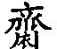

●欲得佛法实益，须向恭敬中求。有一分恭敬，则消一分罪业，增一分福慧。有十分恭敬，则消十分罪业，增十分福慧。
念佛一法，乃至简至易、至广至大之法，必须恳切志诚之极，方能感应道交，即生亲获实益。若懒惰懈怠，毫无敬畏，虽种远因，而亵慢 ⑴ 之罪，有不堪设想者。纵令得生人天，断难高预海会。至于佛像当作真佛看，不可作土木铜铁等看。经典乃三世诸佛之师，如来法身舍利，亦当作真佛看，不可作纸墨等看。对经像时，当如忠臣之奉圣主，孝子之读遗嘱。能如是，则无业障而不消，无福慧而不足矣。现今士大夫学佛者多，然率皆读其文，解其义，取其供给口头，以博一通家之名而已。至于恭敬志诚，依教修持者，诚为难得其人。余常谓欲得佛法实益，须向恭敬中求。有一分恭敬，则消一分罪业，增一分福慧。有十分恭敬，则消十分罪业，增十分福慧。若无恭敬而致亵慢，则罪业愈增，而福慧愈减矣。哀哉！凡遇知交，当谆谆以此意告之，乃莫大之法施也。（《新编全本印光法师文钞》卷一第47页 复邓伯诚居士书一）
●视佛像一如活佛，视佛经祖语，一如佛祖对己说法一样，不敢稍存疑慢。至于平时念佛，声默随意。若睡卧，大小便，澡身濯足等，及经过臭秽不洁之地，俱宜默念，不可出声。出声则便为不恭，默念则功德一样。
念佛虽一切时、一切处，皆无妨碍，然须常存敬畏。必须视佛像一如活佛，视佛经祖语，一如佛祖对己说法一样，不敢稍存疑慢。虽孝子之读遗嘱，忠臣之奉敕旨，当不过是。至于平时念佛，声默随意。若睡卧，大小便，澡身濯足 ⑴ 等，及经过臭秽不洁之地，俱宜默念，不可出声。出声则便为不恭，默念则功德一样。吾常谓欲得佛法实益，须向恭敬中求。有一分恭敬，则消一分罪业，增一分福慧。有十分恭敬，则消十分罪业，增十分福慧。若或了无恭敬，则虽种远因，而亵慢之罪，有不堪设想者矣。今之在家读佛经者，皆犯此病。故于有缘者前，每谆谆言之。（《新编全本印光法师文钞》卷二第200页 与徐福贤女士书）
且终日终年终身念佛之人，岂可于佛，不行礼敬。十大愿王，礼敬居首。座下一切可以不，礼佛决不可以不。若不礼佛，便难感通。何以故，以身图安逸，心之诚亦末由必致其极也。（《新编全本印光法师文钞》卷三第524页 复法海大师书）
●病人心存至诚卧床念佛无罪。无病之人，睡时默念亦无罪。
念佛虽贵至诚清洁，然病人做不到，但心存至诚默念，或出声念，功德仍是一样。以佛慈广大，如父母于儿女病苦时，则不以平常之仪式见责，而且为其抚摩身体，洗濯污秽。若儿女病好，犹然令父母同彼病时一样伺候，则当被雷打。阁下何得谓卧床默念，恐有罪过乎？即无病人，睡时尚宜默念，况病人乎。（《新编全本印光法师文钞》卷三第621页 复裘佩卿居士书二）
●凡事皆须推情度理，方得其宜，守经达权始可适中。故知妇女月经时礼佛诵经，亦不妨，但宜少礼，多在己室念佛耳。礼时当加倍致诚恭敬。
光精神不给，诸凡健忘，前书问妇女月信期中可否礼佛遂致忘答。继思此虽小事，或有不喻，致令妇女每月之中礼诵工夫因兹间断，亦甚有关系，故补答之。凡事皆须推情度理，方得其宜，守经达权始可适中。故知妇女月经时礼佛诵经，亦不妨，但宜少礼，多在己室念佛耳。若当受持经典，亦不妨照旧读诵。但能洗浊致洁，则愈好。如势有不能，但自勉力致洁，勿令手被月水所污，则无碍矣。光昔曾指甲生疮，多日不敢洗其指，然仍旧礼诵。不以为罪者，以病故也。使指不生疮，则罪不可逃逭 ⑴ 矣。（《新编全本印光法师文钞》卷二十三第47页 致许止净居士书）
女人从十二三岁，至四十八九岁，皆有月经。有谓当月经时，不可礼拜持诵，此语不通情理。月经短者，二三日即止，长者六七日方止。修持之人，必须念念无间，何可因此天生之小恙，竟令废弃其修持乎？今谓当月经时，可少礼拜，（宜少礼，不是绝不作礼也。）念佛诵经，均当照常。宜常换洗秽布。若手触秽布，当即洗净。切勿以触秽之手，翻经，及焚香也。佛法，法法圆通，外道只执崖理。世人多多只信外道所说，不知佛法正理，故致一切同人，不能同沾法益也。（《新编全本印光法师文钞》卷八第9页 一函遍复）
女子经期，乃大半世之痼疾 ⑵ ，发必数日，何可以因此遂停念佛乎？平时必须致洁致诚，至此虽身体不能致洁，当倍致诚。小衣内必厚衬布，勿令污血流于佛堂。凡手若摸下体，必须洗净。礼拜若不便，当少礼。至于念佛、诵经，则固以志诚恭敬心行之，其功德与平常了无减少。以佛为一切众生之大慈悲父母，当此病发时，能至诚念佛，则当倍生怜愍。若如愚人所执，身有此不洁之病，则不可念佛。若儿女堕于圊厕之中，亦不可呼父母以求救援也，有是理乎？（《新编全本印光法师文钞》卷九第245页 致自觉居士书）
●历观传记高人，咸皆视经像如视活佛。其敬畏之迹，虽忠臣之奉圣主，孝子之读遗嘱，何能仿佛一二。因其恭敬之极，故能断惑证真，超凡入圣。
古人修行，皆能证道。今人修行，少见明心。岂人根之不等耶，抑亦敬慢之所致耳。历观传记高人，咸皆视经像如视活佛。其敬畏之迹，虽忠臣之奉圣主，孝子之读遗嘱，何能仿佛一二。因其恭敬之极，故能断惑证真，超凡入圣。观于二祖立雪 ⑴ ，程门立雪 ⑵ ，可见矣。今人视佛像如土木，视佛经如故纸。纵有信心，读诵受持，亦不过供其口头滑利而已，有何实益之可论也。虽种远因，而亵慢之罪，有不堪设想者。愿阁下以博学宏词，提倡佛法时，必须常以此普利一切。则法门幸甚，众生幸甚。（《新编全本印光法师文钞》卷一第38页 复濮大凡居士书）
●向恭敬中求佛法实益，系从初心至究竟之决定实义。故凡见一切信心人，皆须以此意告之。
吾常谓欲得佛法实益，须向恭敬中求。有一分恭敬，则灭一分罪业，增一分福慧。有十分恭敬，则灭十分罪业，增十分福慧。若全无恭敬，虽种远因，其亵慢之罪，有不堪设想者。凡见一切信心人，皆须以此意告之。此系从初心至究竟之决定实义。若当作腐僧迂谈，便为自暴自弃，岂特辜负印光，实为辜负自己也已。（《新编全本印光法师文钞》卷一第85页 复高邵麟居士书四）
●入道多门，唯人志趣，了无一定之法。其一定者，曰诚，曰恭敬。此二事虽尽未来际诸佛出世，皆不能易也。
座下勇猛精进，为人所难能。又欲刺血写经，可谓重法轻身，必得大遂所愿矣。虽然，光愿座下先专志修念佛三昧。待其有得，然后行此法事。倘最初即行此行，或恐血亏神弱，难为进趣耳。入道多门，唯人志趣，了无一定之法。其一定者，日诚，曰恭敬。此二事虽尽未来际诸佛出世，皆不能易也。而吾人以博地凡夫，欲顿消业累，速证无生，不致力于此，譬如木无根而欲茂，鸟无翼而欲飞，其可得乎？（《新编全本印光法师文钞》卷二第269页 复弘一师书一）
●诚与恭敬，此语举世咸知，此道举世咸昧，实为超凡入圣了生脱死之极妙秘诀。世出世间，一切诸法，欲得精一，莫不以此而为基本。
然印光实有人所不得而己所独得之诀，不妨由汝之请，以普为天下之诸佛子告。其诀唯何，曰诚，曰恭敬。此语举世咸知，此道举世咸昧。印光由罪业深重，企消除罪业，以报佛恩，每寻求古德之修持懿范 ⑴ 。由是而知诚与恭敬，实为超凡入圣了生脱死之极妙秘诀。故常与有缘者谆谆言之。持经利益随心论，虽发其端，未明其概。拟续一二万言，历引古德诚敬之迹，与其感应之道，并参己芜语 ⑵ ，发挥评论。俾阅者法戒分明，知所取舍，自不至以巨因而获微果，与夫以善因而招恶果耳。斯言已与徐君说之。须知诚与恭敬，非唯学佛宜然。世出世间，一切诸法，欲得精一，莫不以此而为基本。观孟子弈秋诲弈 ⑶ 一事，可以知矣。（《新编全本印光法师文钞》卷一第166页 复永嘉某居士书五）
●欲得佛法实益，须向恭敬中求。若毫无恭敬，虽诵经念佛，亦非毫无利益。若现生竭诚尽敬，则现生即可仗佛慈力，带业往生西方。
吾常曰，欲得佛法实益，须向恭敬中求。有一分恭敬，即消一分罪业，增一分福慧。有十分恭敬，即消十分罪业，增十分福慧。若毫无恭敬，虽诵经念佛，亦非毫无利益。而亵渎之罪，当先受之，堕落三途，经若干劫。其罪毕已，当承此善因，又复闻法修道，吃素念佛，求生西方，了生脱死。若现生竭诚尽敬，则现生即可仗佛慈力，带业往生西方。一得往生，则超凡入圣，了生脱死，永离众苦，但受诸乐矣。（《新编全本印光法师文钞》卷八第18页 诫吾乡初发心学佛者书）
●《金刚经》云：“若是经典所在之处，即为有佛。”何以故？以一切诸佛，及诸佛阿耨多罗三藐三菩提法，皆从此经出故。《涅槃经》云：“法是佛母，佛从法生。三世如来，皆供养法。”况博地凡夫，通身业力，岂可任狂妄之知见，不存敬畏，同俗儒之读诵，辄行亵黩。
《金刚经》云：“若是经典所在之处，即为有佛，若尊重弟子。”又云：“在在处处，若有此经，一切世间天人阿修罗所应供养。当知此处，即为是塔。皆应恭敬作礼围绕，以诸华香而散其处。”何以令其如此？以“一切诸佛，及诸佛阿耨多罗三藐三菩提法，皆从此经出”故。而诸大乘经处处教人恭敬经典，不一而足。良以诸大乘经，乃诸佛之母，菩萨之师。三世如来之法身舍利，九界众生之出苦慈航。虽高证佛果，尚须敬法。类报本追远，不忘大恩。故《涅槃经》云，法是佛母，佛从法生。三世如来，皆供养法。况博地凡夫，通身业力，如重囚之久羁 ⑴ 牢狱，莫由得出。何幸承宿世之善根，得睹佛经。如囚遇赦书，庆幸无极。固将依之以长揖三界，永出生死牢狱，亲证三身，直达涅槃家乡，无边利益，从闻经得。岂可任狂妄之知见，不存敬畏，同俗儒之读诵，辄行亵黩。（《新编全本印光法师文钞》卷四第683页 竭诚方获实益论）
●凡诵经时，必须息虑忘缘，一心净念，如对圣容，亲聆圆音，不敢稍萌懈怠疏忽之意。久而久之，自可潜通佛智，暗合道妙。喻如阳春一到，坚冰自消，诚到极处，豁然贯通。此是看经念佛最妙之法。
世出世间诸法，无不以诚为本。诸修行人，更当致诚，诚则业障消除，善根增长。凡诵经时，必须息虑忘缘，一心净念，如对圣容，亲聆圆音，不敢稍萌懈怠疏忽之意。久而久之，自可潜通佛智，暗合道妙。喻如阳春一到，坚冰自消，诚到极处，豁然贯通。此是看经念佛最妙之法。汝能终身依此而行，其利益有不可名言焉者。宗懿志之。（《新编全本印光法师文钞》卷十二第937页 题王宗懿女士书弥陀经弁言）
●阅读佛经须生感恩心，作难遭想。净手洁案，主敬存诚，如面佛天，如临师保，则无边利益，自可亲得。若肆无忌惮，任意亵渎，及固执管见，妄生毁谤，则罪过弥天，苦报无尽。
一切佛经，及阐扬佛法诸书，无不令人趋吉避凶，改过迁善，明三世之因果，识本具之佛性，出生死之苦海，生极乐之莲邦，读者必须生感恩心，作难遭想。净手洁案，主敬存诚，如面佛天，如临师保，则无边利益，自可亲得。若肆无忌惮，任意亵渎，及固执管见，妄生毁谤，则罪过弥天，苦报无尽。倘鉴愚诚，则幸甚。（《新编全本印光法师文钞》卷二十四第417页 印光法师文钞三版封二题辞）
又近世儒者率皆不知敬书，或置之坐榻，或用作枕头。或以圣训供戏谑，或以法言证鄙事。或大怒而掷书于地，或抽解而犹自看书。种种亵渎，不堪枚举。不但大小便后，概不洗手，即夜与妇宿，亦不洗手。以故真儒日稀，而世道日见陷溺也。倘以此习惯看佛经，则未得其益，先获其祸。深可痛伤。恳祈信心士女，各各注意于恭敬经典。即儒书所说，亦格致诚正修齐治平之嘉谟，何可任意亵渎？亵渎，即是自弃其身于明明德、止至善之外。佛经所说乃生佛之三世因果，凡夫之六道轮回，与夫背尘合觉之方，超凡入圣之道，较比儒书只说现世、不说过未，只重形躯、不重心性者，当切要百千万倍矣。以素所习惯读儒书，尚获大罪，倘以此习惯读佛经，则其罪不更大乎？若能竭诚尽敬，则罪业日消，福慧日增，近则现生往生西方，远则将来圆成佛道。我愿同仁，纳此刍荛，则现未之益，悉皆亲受矣。（《新编全本印光法师文钞》卷二十四第384页 普劝敬惜字纸及尊敬经书文）
●书经时须比新进士下殿试场，严恭寅畏，无稍怠忽。能如是者，必能即业识心，成如来藏，于选佛场中，可得状元。
接手书，见其字体工整，可依此书经。夫书经乃欲以凡夫心识，转为如来智慧。比新进士下殿试场，尚须严恭寅畏 ⑴ ，无稍怠忽。能如是者，必能即业识心，成如来藏，于选佛场中，可得状元。今人书经，任意潦草，非为书经，特藉此以习字，兼欲留其笔迹于后世耳。如此书经，非全无益。亦不过为未来得度之因，而其亵慢之罪，亦非浅鲜。（《新编全本印光法师文钞》卷二第274页 复弘一师书二）
●以菩萨名号作拜墊用，罪过之极。光若作一方主人，当必到处声明此事之过。俾有信心者，唯得其益，不受其损也。
●譬如子孙，以祖父之名，书之于布，以作拜祖父时垫地之用，及坐地时，恐污衣服，用此布以垫坐，则人必以为不孝，自己心亦不忍。何竟敢以佛菩萨圣号，印于垫地护衣之布上乎？
下院当家来，以所寄壬年信及物件交光，知所寄白布，托壬年以打印者。此事罪过之极，以菩萨名号作拜垫用，已属亵渎至极，况尚有就地作坐垫用者。余光绪二十年在普陀一见，二十一年在育王又见，以为诧异。告于舍利殿殿主，彼云此宁波家风也。自惭无力挽此恶风，使光若作一方主人，当必到处声明此事之过。俾有信心者，唯得其益，不受其损也。且托者既属至戚，何不开陈罪福，以祈用白布作垫，一则仍不污衣，二则唯益无损，其于彼方为有益。何可循例缄默，仍代为彼转求。（《新编全本印光法师文钞》卷三第502页 与马契西居士书十二）
江浙信心妇女，每以白布铺地礼佛，名为手方。间或垫坐，为护衣服，固无不可，但不应打印其上。若已打印，则万万不可铺以礼佛，况垫坐乎！彼殆谓半截未打印，坐则无碍。不知以有字之布置之于地，尚属亵渎，况既坐其下半截，上半截亦贴靠自己下体，或有竟坐于打印之处矣。须知印上之字，皆是佛菩萨之圣号，理当格外尊重，何可如此亵渎？阿育王之印，则是释迦如来真身舍利宝塔之印，普陀普济寺，则是敕建南海普陀禅寺观音宝印，（普陀禅寺，乃明万历三十三年御赐额，至清康熙三十八年始改赐普济禅寺额。如此，谅此印是康熙三十八年以前所铸者。）法雨寺，则是南海普陀天华法雨观音宝印。余可类推。打印之布，只可藏于家中佛龛，或神龛内，则有功德。若用以铺地拜佛，则其罪非小，况垫坐乎！（如已经铺地拜佛用过之手方，则又只好洗净焚化，切不可藏佛龛中。）譬如子孙，以祖父之名，书之于布，以作拜祖父时垫地之用，及坐地时，恐污衣服，用此布以垫坐，则人必以为不孝，自己心亦不忍。何竟敢以佛菩萨圣号，印于垫地护衣之布上乎？其原由于僧人不知事务，唯欲多打印，则多得钱，不计此布万万不可打印。若此等僧，纵有修持，亦当堕落。以乱为人打印，令一切信心妇女，同作亵渎佛菩萨之大罪故也。愿诸僧俗，各各痛戒。又愿识字之人，见闻此说，逢人劝诫，令一切人改此恶习，则功德无量无边矣。（《新编全本印光法师文钞》卷二十四第371页 戒坐垫打佛菩萨名号印）
●经像不能供不能存者，必须另设化器，严以防守，不令灰飞余处。以其灰取而装于极密致之布袋中，又加以净沙或净石，俾入水即沉，不致漂于两岸。有过海者，到深处投之海中，或大江深处则可，小沟小河断不可投。如是行者，是为如法。
像之可以供可以存者，供之或存之。其不能供不能存者，焚化之。毁像焚经，罪极深重，此约可供可存者说。若不可供不可存者，亦执此义，则成亵渎。譬如人子于父母生时，必须设法令其安全。于父母亡后，必须设法为之埋藏。若不明理之愚人，见人埋藏父母以为行孝，则将欲以活父母而埋藏之而尽孝。或见人供养父母以为孝，遂对已死之父母，仍依平日供养之仪供养之。二者皆非真孝也。经像之不能读不能供者，固当焚化之。然不可作平常字纸化，必须另设化器，严以防守，不令灰飞余处。以其灰取而装于极密致之布袋中，又加以净沙或净石，俾入水即沉，不致漂于两岸。有过海者，到深处投之海中，或大江深处则可，小沟小河断不可投。如是行者，是为如法。若不加沙石，决定漂至两傍，仍成亵渎，其罪非小。而秽石秽砖，切不可用。（《新编全本印光法师文钞》卷十三第10页 复如岑师代友人问书）
●先经，次论。经论又须先大乘，次小乘，不可前后倒置。
凡录佛祖经论，须先经，次论，然后方及此方著述。经论又须先大乘，次小乘，不可前后倒置。如纶音 ⑴ 告示，不可倒列。一部中不能如此列者，一门断不可不依此而列。否则令无知者藐忽佛经，而大方家谓不知法耳。（《新编全本印光法师文钞》卷十四第231页 复丁福保居士书五）
●当送通文理、有信心、能恭敬者。善书为入圣超凡之前导，须送给稍有信心，通达文理之人。送时又须诫以恭敬，切勿亵渎。
《净土五经》乃念佛法门之根本。当送通文理、有信心、能恭敬者。（《新编全本印光法师文钞》卷十六第673页 复拜竹居士书四）
善书贵于流通，然须其人稍有信心、通达文理，然后可以送彼。送时又须诫以恭敬，切勿亵渎。若或亵渎，必有罪咎。此种书，皆为入圣超凡之前导，不得与一切小说闲书一例看，则或稍有益彼处。（《新编全本印光法师文钞》卷十八第1180页 复傅法霖居士书）
己于十三日令弘化社寄《文钞》十包，每包二部，尚欠分量，因加《了凡四训》一本，此书文理极圆满周到，为一切人所当详读之书。现今纸贵之极，印书之报纸，贱时二元三角一领，今已五元多矣，尚日见涨价。当保贵经书，否则后来恐无力能得矣。送人时，亦当以此告之。又须令其恭敬，不可亵渎。（《新编全本印光法师文钞》卷二十三第210页 复赵智云居士书一）
●不可。
问，有字有佛像之衣服等，可作殓具否？（师旁批云不可。）经典可焚化以送亡人否？（师旁批云不可妄焚。）
答，如焚当另备化器，不可以经灰归锡箔灰卖。宜另包，用净布作袋，内加净沙，有人过海，投之深处，否则勿焚。不加沙，恐不沉，仍漂岸边。（《新编全本印光法师文钞》卷二十二第1940页 答卓智立居士问）
●会。护法神必令其遭祸，以儆其效此作恶者。
佛虽慈悲广大，而欲度众生，须有折摄。若慢佛、毁佛，佛实不生憎爱，然不行折伏，则无以为劝。以故护法神，必令其遭祸，以儆其效此作恶者，其慈悲为何如也。（《新编全本印光法师文钞》卷二十第1510页 复卓智立居士书七）
●卧室断不可供佛，除贫无余屋。若寮房供佛，当作大雄宝殿想，或可少招罪过。否则其功甚少，其过无量。
欲供养者，当于北京路长康里佛经流通处，请石印之西方三圣像，用镜龛装好，彼处亦有，则阿弥陀佛、观音、势至，俱全矣。卧室若不洁，可将佛像供于净室，日请来熟视一二次，则心中便可作忆念矣。（《新编全本印光法师文钞》卷三第621页 复裘佩卿居士书二）
卧室供佛，除贫无余屋则可。若有余屋，断不可在卧室供也。（《新编全本印光法师文钞》卷十三第114页 复许止净居士书）
既有佛堂，彼何须又在寮房供佛。今人多半是粗心浮气，殿堂上尚肆无忌惮。正念诵礼拜时，尚敢出下气，则寮房之放肆，更不堪言。若寮房供佛，当作大雄宝殿想，或可少招罪过，否则其功甚少，其过无量。每见高座法师，尚不以出下气为罪，而于念诵时竟敢行之，况悠悠泛泛之学人乎。座下所说，乃于无可设法中，与彼作一方便，当以在殿礼拜，为免招罪过之第一法。（《新编全本印光法师文钞》卷十三第9页 复如岑师代友人问书）
●吾人业力凡夫，在圣中圣、天中天之佛殿中，三宝具足之地，竟敢不加束敛，任意放屁，此之罪过，极大无比。
●念佛之人，夜间不可赤体睡，须穿衫裤，以心常如在佛前也。
学佛之人，夜间不可赤体睡，须穿衫裤，以心常如在佛前也。吃饭不可过度，再好的饭，只可吃八九程。若吃十程，已不养人。吃十几程，脏腑必伤。常如此吃，必定短寿。饭一吃多，心昏身疲，行消不动，必至放屁。放屁一事，最为下作，最为罪过。佛殿僧堂，均须恭敬。若烧香，不过表心，究无甚香。若吃多了放的屁，极其臭秽，以此臭气，熏及三宝，将来必作粪坑中蛆。不吃过度，则无有屁。若或受凉，觉得不好，无事则出至空地放之，待其气消，再回屋中。如有事不能出外，当用力提之，不一刻，即在腹中散开矣。有谓，不放则成病，此话比放屁还罪过，万不可听。佛制戒律，未说此事，想古人身体好，又不贪吃，无有此事，故未说。若有，佛必说之。切不可谓佛不说，就应当放，则是自求堕落，佛也难救矣。孔子以圣人之资格，朝于凡夫之国君，将欲升堂，在阶下，便不敢大出气，况入堂面君乎。故《论语》云：“摄齐升堂，鞠躬如也，屏气似不息者。”（摄，提也。齐，音咨，与[ ]同，衣岔子也。鞠，曲也。屏，闭藏也。息，鼻中气也。孔子朝君，将升堂，先鞠躬而行。鞠躬，则衣前长，故必提其两岔，去地约一尺，方不至蹋其衣而跌蹶失仪。严肃之极，故鼻中之气，似乎不出。试看此是何等敬畏。今人比孔子，则相去悬远。时君与佛，又相去悬远。放屁与不出气，又相去悬远。静言思之，直大地无容身之处矣，可不极力留心乎。）吾人业力凡夫，在圣中圣、天中天之佛殿中，三宝具足之地，竟敢不加束敛，任意放屁，此之罪过，极大无比。许多人因不多看古德著述，当做古德不说。不知古德说的巧，云泄下气，他也不理会是什么话，仍不介意。光三四十年前，常说此事，后试问之，人不知是何事，以故只好直说放屁耳。唱戏骂人说放肆，就是说你说的话是放屁。凡有所畏惧，气都不敢大出，从何会放屁。由其肆无忌惮，故才有屁。你勿谓说放屁话，为不雅听，我实在要救人于作粪坑之蛆之前耳。（《新编全本印光法师文钞》卷八第23页 诫吾乡初发心学佛者书）
●佛经窃谓以白话解，须先列经文，后再以白话简略注之。凡不关紧要之闲字，概不用，既明了又不枝蔓。若完全把经文编做白话，万万不可。何以故？以久则不得其要，而失本源故。
小说每以回名。吾人解经，自有成规，何得反效小说之用回乎？窃谓以白话解，须先列经文，后再以白话简略注之。凡不关紧要之闲字，概不用，既明了又不枝蔓。每见有白话不几个字，便弄成十数字，反费事。若完全把经文编做白话，万万不可。何以故？以久则不得其要，而失本源故。光老矣，目力不给，己于二十二年冬登新、申报（按：即新闻报、申报）半月刊，拒绝一切信札差事。序文不能作，以无精力目力，非不愿为经效劳也。即此来往信，乃以手眼二镜强勉从事。若用其一，尚不能见。当悯光老而业重障深，不以见怪，则幸甚。以白话解用译字，未免有僭译经 ⑴ 之过，不可不慎。凡说话须按事实，汝之推尊于光，何异以平民称皇帝，欲不累我以凡滥圣之愆 ⑵ ，何可得乎？切戒切戒！（《新编全本印光法师文钞》卷十五第470页 复胡宅梵居士书三）
●具真信切愿，持佛名号为正行。修行众善，回向往生为助行。
佛愍众生无力断惑，难了生死，故特开一仗佛慈力，带业往生之横超法门。无论断惑与否，若具真信切愿，持佛名号（此是正行），及修行众善，回向往生（此是助行），无一不得生者。（《新编全本印光法师文钞》卷一第73页 复高邵麟居士书三）
数日前接手书，知居士近来道心真切，不胜欣忭。所谓修净业者，唯在一心求生西方，不作此世来生一切人天福乐想耳。凡所持诵经咒，并一切种种功德，无论大小，皆以此功德，回向往生，则心无二念，凡一切读诵礼拜及诸善行，皆成净土助行。念佛之正行，再加以种种功德助之，则如船遇顺风，又加高挂风篷，则一日千里，速登彼岸矣。所忌者，心口不相应，则一切善行，只得现世虚名，无有了生脱死之实果矣。纵令来生得其人天福乐，则由享福故，必定大造恶业。及至命终，则永堕地狱，万劫难出矣。哀哉！由是之故，诸佛诸祖，皆劝众生求生西方也。（《新编全本印光法师文钞》卷二十三第92页 复马香瑞居士书）
●三昧者，华言正定，亦云正受。正定者，寂照双融之谓。正受者，妄伏真现之谓。
●念佛人以真切之信愿，持万德之洪名。念至功纯力极，则全心是佛，全佛是心，心佛不二，心佛一如而已。
欲证三昧，自有佛祖所示三世不易之法。何得问我所证，方能缵步 ⑴ 。《弥陀经》云，执持名号，若一日乃至若七日，一心不乱。（此一日七日，乃是举例之词，不可执定。若是等觉根性，一念即能不乱，何待一日。若是逆恶根性，毕生亦难一心，何况七日。王耕心 ⑵ 混上中下根为一例，发而为论，深自矜夸 ⑶ ，谓为发前人所未发，实为上违佛祖诚言，下启后进狂妄，令人不胜悲痛哀怜而莫之能止也。）《观经》云：“诸佛如来，是法界身，入一切众生心想中，是故汝等心想佛时，是心即是三十二相，八十随形好，是心作佛，是心是佛。”（作指心想，是指心是，观想既是作，持诵礼拜岂不是作。举一反三，儒者尚然，况博地凡夫，上窥佛意，何得不依圆顿妙解，而以担板之见推测乎。）楞严大势至云：“都摄六根，净念相继，得三摩地，斯为第一。”文殊选圆通偈，谓反闻闻自性，性成无上道。今例之曰，反念念自性，性成无上道。《四十二章经》云：“夫心者，置之一处，无事不办。”梦东云：“真为生死，发菩提心，以深信愿，持佛名号，此十六字为念佛法门一大纲宗。”欲修三昧，何不于此等语句中全身靠倒。不以圣言为量，而以我之罪业凡夫为准，岂不颠倒之甚乎？然汝发此言，盖亦有由。以衷论详示省一大师所见之境，及耕心谓承彼心传，意者必有种种不思议妙境，及口传心受之妙诀耳。不知三昧者，华言正定，亦云正受。正定者，寂照双融之谓。正受者，妄伏真现之谓。寂照双融，有何境界之可得。《心经》云：“照见五蕴皆空，度一切苦厄。”又曰：以无所得故，三世诸佛得阿耨多罗三藐三菩提。楞严云：“圆满菩提，归无所得。”修禅定人（指四禅八定）及参禅人，以唯仗自力，不求佛加，故于工夫得力真妄相攻之时，每有种种境界，幻出幻没。譬如阴雨将晴之时，浓云破绽，忽见日光，恍惚之间，变化不测。所有境界，非真具道眼者，不能辨识。若错认消息，则著魔发狂，莫之能医。念佛人以真切之信愿，持万德之洪名，喻如杲日当空，行大王路。不但魑魅魍魉 ⑴ ，铲踪灭迹，即歧途是非之念，亦无从生。推而极之，不过曰，念至功纯力极，则全心是佛，全佛是心，心佛不二，心佛一如而已。此理此行，唯恐人之不知，不能合佛普度众生之愿，岂秘而不传，独传于汝乎？若有暗地里口传心受之妙诀，即是邪魔外道，即非佛法。（《新编全本印光法师文钞》卷一第163页 复永嘉某居士书五）
●制心不令外驰，久久自会成片。
念佛不能纯一，必须制心不令外驰，久久自会纯一。成片者，纯一无杂之谓也。（《新编全本印光法师文钞》卷三第488页 复马契西居士书四）
●事持者，信有西方阿弥陀佛，而未达“是心作佛，是心是佛”。理持者，信西方阿弥陀佛，是我心具，是我心造。以事持纵未悟理，岂能出于理外，不过行人自心未能圆悟。既悟焉，则即事是理，岂所悟之理，不在事中乎？理不离事，事不离理，事理无二。狂妄知见，执理废事，则便不融合矣。
“事持者，信有西方阿弥陀佛，而未达是心作佛，是心是佛。但以决志愿求生故，如子忆母，无时暂忘。”此未达理性，而但依事修持也。“理持者，信西方阿弥陀佛，是我心具，是我心造。”心具者，自心原具此理；心造者，依心具之理而起修，则此理方能彰显，故名为造。心具即理体，心造即事修。心具即是心是佛，心造即是心作佛。是心作佛，即称性起修；是心是佛，即全修在性。修德有功，性德方显。虽悟理而仍不废事，方为真修。否则便堕执理废事之狂妄知见矣。故下曰：“即以自心所具所造洪名，为系心之境，令不暂忘也”此种解法，千古未有。实为机理双契，理事圆融。非法身大士，孰克臻此？以事持纵未悟理，岂能出于理外。不过行人自心未能圆悟。既悟焉，则即事是理。岂所悟之理，不在事中乎？理不离事，事不离理，事理无二。如人身心，二俱同时运用，断未有心与身，彼此分张者。达人则欲不融合而不可得，狂妄知见，执理废事，则便不融合矣。（《新编全本印光法师文钞》卷三第496页 复马契西居士书九）
●学解，从凡夫地，乃至佛地，一切诸法，无不当学。若欲学行，当择其契理契机之一法，专精致力，方能速证实益。所谓契理契机之法，无过信愿持佛名号，求生西方。
善导和尚云：“若欲学解，从凡夫地，乃至佛地，一切诸法，无不当学。若欲学行，当择其契理契机之一法，专精致力，方能速证实益。否则经劫至劫，尚难出离。”所谓契理契机之法，无过信愿持佛名号，求生西方。其法备在《弥陀要解》及净土诸书中。当寻绎 ⑴ 之，兹不多赘。（《新编全本印光法师文钞》卷一第57页 复邓新安居士书）
●身业专礼，口业专称，意业专念，如是则往生西方，万不漏一。杂修谓兼修种种法门，回向往生。以心不纯一，故难得益，则百中希得一二，千中希得三四往生者。此金口诚言，千古不易之铁案也。
善导和尚系弥陀化身，有大神通，有大智慧。其宏阐净土，不尚玄妙，唯在真切平实处，教人修持。至于所示专杂二修，其利无穷。专修谓身业专礼，（凡围绕及一切处身不放逸皆是。）口业专称，（凡诵经咒，能志心回向，亦可名专称。）意业专念。如是则往生西方，万不漏一。杂修谓兼修种种法门，回向往生。以心不纯一，故难得益，则百中希得一二，千中希得三四往生者。此金口诚言，千古不易之铁案也。二位当以此自利，又当以此普利一切。（《新编全本印光法师文钞》卷一第136页 复永嘉某居士昆季书）
●生死心切，诚敬真挚，则专兼均可。否则一切皆难得利益矣。
修行用功，固宜专精。然凡夫妄想纷飞，若不加经咒之助，或致悠忽懈怠。倘能如丧考妣 ⑴ ，如救头然 ⑵ 之痛切，则于一行三昧，实为最善。若以悠忽当之，久或懈惰放废，固不如兼持经咒为有把握。汝祈我决，我与汝说其所以，汝可自决。总之生死心切，诚敬肫挚 ⑶ ，则专兼均可。否则专落悠忽，兼落纷繁。良以根本不真切，故致一切皆难得利益矣。（《新编全本印光法师文钞》卷二十一第1680页 开示五则）
●具缚凡夫，心多昏散。若不假身口礼诵之力，则欲得一心，末由也已。
念佛虽贵心念，亦不可废口诵。以身口意三，互相资助。若心能忆念，身不礼敬，口不持诵，亦难得益。世之举重物者，尚须以声相助，况欲摄心以证三昧者乎。所以《大集经》云，大念见大佛，小念见小佛。古德谓大声念，则所见之佛身大。小声念，则所见之佛身小耳。而具缚凡夫，心多昏散，若不假身口礼诵之力，则欲得一心，末由也已。（《新编全本印光法师文钞》卷一第33页 复濮大凡居士书）
●所谓十念记数者，当念佛时，从一句至十句，须念得分明，仍须记得分明。至十句已，又须从一句至十句念，不可二十三十。随念随记，不可掐珠，唯凭心记。若十句直记为难，或分为两气，则从一至五，从六至十。若又费力，当从一至三，从四至六，从七至十，作三气念。念得清楚，记得清楚，听得清楚，妄念无处著脚，一心不乱，久当自得耳。
●吾辈之钝根，舍此十念记数之法，欲都摄六根，净念相继，大难大难。又须知此摄心念佛之法，乃即浅即深、即小即大之不思议法。但当仰信佛言，切勿以己见不及，遂生疑惑，致多劫善根，由兹中丧，不能究竟亲获实益，为可哀也。
如或犹涌妄波，即用十念记数，则全心力量，施于一声佛号，虽欲起妄，力不暇及。此摄心念佛之究竟妙法，在昔宏净土者，尚未谈及。以人根尚利，不须如此，便能归一故耳。印光以心难制伏，方识此法之妙。盖屡试屡验，非率尔 ⑴ 臆说。愿与天下后世钝根者共之，令万修万人去耳。所谓十念记数者，当念佛时，从一句至十句，须念得分明，仍须记得分明。至十句已，又须从一句至十句念，不可二十三十。随念随记，不可掐珠，唯凭心记。若十句直记为难，或分为两气，则从一至五，从六至十。若又费力，当从一至三，从四至六，从七至十，作三气念。念得清楚，记得清楚，听得清楚，妄念无处著脚，一心不乱，久当自得耳。须知此之十念，与晨朝十念，摄妄则同，用功大异。晨朝十念，尽一口气为一念，不论佛数多少。此以一句佛为一念。彼唯晨朝十念则可，若二十三十，则伤气成病。此则念一句佛，心知一句，念十句佛，心知十句。从一至十，从一至十，纵日念数万，皆如是记。不但去妄，最能养神。随快随慢，了无滞碍。从朝至暮，无不相宜。较彼掐珠记数者，利益天殊。彼则身劳而神动，此则身逸而心安。但作事时，或难记数，则恳切直念。作事既了，仍复摄心记数。则憧憧往来 ⑵ 者，朋从 ⑶ 于专注一境之佛号中矣。大势至谓“都摄六根，净念相继，得三摩地，斯为第一。”利根则不须论，若吾辈之钝根，舍此十念记数之法，欲都摄六根，净念相继，大难大难。又须知此摄心念佛之法，乃即浅即深、即小即大之不思议法。但当仰信佛言，切勿以己见不及，遂生疑惑，致多劫善根，由兹中丧，不能究竟亲获实益，为可哀也。掐珠念佛，唯宜行住二时。若静坐养神，由手动故，神不能安，久则受病。此十念记数，行住坐卧皆无不宜。卧时只宜默念，不可出声。若出声，一则不恭，二则伤气。切记切记。（《新编全本印光法师文钞》卷一第82页 复高邵麟居士书四）
●尽一口气为一念，十口气为十念。此法只可晨朝一用，或朝暮并日中三用，再不可多，多则伤气受病。
十念一法，乃慈云忏主 ⑴ 为国王大臣政事多端、无暇专修者设。又欲令其净心一心，故立尽一口气为一念之法。俾其心随气摄，无从散乱。其法之妙，非智莫知。然只可晨朝一用，或朝暮并日中三用，再不可多，多则伤气受病。切不可谓此法最能摄心，令其常用，则为害不小。（《新编全本印光法师文钞》卷十四第211页 复丁福保居士书四）
●摄心之法，莫先于至诚恳切。当摄耳谛听。无论出声默念，皆须念从心起，声从口出，音从耳入。（默念虽不动口，然意地之中，亦仍有口念之相。）心口念得清清楚楚，耳根听得清清楚楚，如是摄心，妄念自息矣。
●念从心起，声从口出，皆须字字句句，分明了了。又须摄耳谛听，字字句句，纳于心中。耳根一摄，诸根无由外驰，庶可速至一心不乱。
念佛必须摄心，念从心起，声从口出，皆须字字句句，分明了了。又须摄耳谛听，字字句句，纳于心中。耳根一摄，诸根无由外驰，庶可速至一心不乱。大势至所谓“都摄六根，净念相继，得三摩地，斯为第一”者，即此是也。文殊所谓“反闻闻自性，性成无上道”者，亦即此是也。（《新编全本印光法师文钞》卷二第201页 与徐福贤女士书）
若念佛有妄想，当用心听。字字句句，都要听得明白。无论大声小声、心中默念，都要听得清楚。久而久之，心自归一。《楞严经·大势至圆通章》云：“都摄六根，净念相继，得三摩地，斯为第一。”即是摄耳谛听之法。当依此而念，不至仍旧妄想纷飞耳。（《新编全本印光法师文钞》卷十七第876页 复方圣照居士书二）
至于念佛，心难归一，当摄心切念，自能归一。摄心之法，莫先于至诚恳切。心不至诚，欲摄莫由。既至诚已，犹未纯一，当摄耳谛听。无论出声默念，皆须念从心起，声从口出，音从耳入，（默念虽不动口，然意地之中，亦仍有口念之相。）心口念得清清楚楚，耳根听得清清楚楚。如是摄心，妄念自息矣。（《新编全本印光法师文钞》卷一第81页 复高邵麟居士书四）
●修有专圆，由众生根器不一，致诸祖立法不同。善导乃弥陀化身，其所示专修，最吃紧。
卍莲 ⑴ 净土诗小序，前两行发明遮表一心，亦属谬论。善导专修净业，可名表专一心。永明万善圆修，何名遮专一心？直是一错到底。当云净土法门，修有专圆。由众生根器不一，致诸祖立法不同。善导令人一心持名，莫修杂业者，恐中下人以业杂致心难归一，故示其专修也。永明令人万善齐修，回向净土者，恐上根人行堕一偏，致福慧不能称性圆满，故示其圆修也。要之人未到大彻大悟地位，其立言决难无弊。譬如井蛙，只见一井量之青天而已。（《新编全本印光法师文钞》卷二第234页 复永嘉某居士书二）
今为汝寄新印《文钞》一部，及善导《观经疏》一部。善导乃弥陀化身，其所示专修，最吃紧。在上品上生章注中，祈详阅之。（《新编全本印光法师文钞》卷十七第873页 复沈授人居士书）
●随己身分而立功课。但决定不可不依信愿念佛，回向往生一法耳。能专念佛，不持咒，则可。若专念佛，破持咒，则不可。况往生咒，系净土法门之助行乎。
修行唯随己身分而立功课，非可执一以论。但决定不可不依信愿念佛，回向往生一法耳。一门深入，万善圆修均可。若弃舍净土，于别种法门一门深入，并万善圆修，均不可。以仗自力，决难现生了脱故也。（《新编全本印光法师文钞》卷十五第527页 复谢慧霖居士书七）
一句佛号，包括一大藏教，罄无不尽。修净业者，有专修、圆修种种不同。譬如顺水扬帆，则更为易到。亦如吃饭，但吃一饭，亦可充饥。兼具各蔬，亦非不可。能专念佛，不持咒，则可。若专念佛，破持咒，则不可。况往生咒，系净土法门之助行乎。（《新编全本印光法师文钞》卷十七第822页 复卓智立居士书三）
金刚等持诵，亦不必废。但以持经咒之功德，通用于回向往生，则六度万行，皆为往生助缘，是为圆修。（《新编全本印光法师文钞》卷十九第1276页 复慧海居士书五）
●发真实心，真为了生死。念佛时必须字字句句从心而发，从口而出，从耳而入。一句如是，百千万句亦如是。又须善于用心，勿致过为执著。
念佛欲得一心，必须发真实心，为了生死，不为得世人谓我真实修行之名。念时必须字字句句从心而发，从口而出，从耳而入。一句如是，百千万句亦如是。能如是，则妄念无由而起，心佛自可相契矣。又须善于用心，勿致过为执著，或致身心不安，或致起诸魔事。都摄六根，净念相继，依此而行，决无歧误。（《新编全本印光法师文钞》卷二第250页 复永嘉周群铮居士书）
●求感通之心，便是修道第一大障。况以躁妄格外企望，或致起诸魔事，破坏净心。一心之后，定有感通，感通则心更精一。
接手书，知发大菩提心，誓证念佛三昧。刻期掩关，以祈遂此大愿。光阅之不胜欢喜。所谓最后训言，光何敢当，然可不尽我之愚诚以奉之乎？虽固知座下用此种络索不著，而朋友往还，贫富各尽其分，则智愚何独不然。但尽愚诚即已，不计人之用得著与否耳。窃谓座下此心，实属不可思议。然于关中用功，当以专精不二为主。心果得一，自有不可思议感通。于未一之前，切不可以躁妄心先求感通。一心之后，定有感通，感通则心更精一。所谓明镜当台，遇形斯映，纭纭自彼，与我何涉。心未一而切求感通，即此求感通之心，便是修道第一大障。况以躁妄格外企望，或致起诸魔事，破坏净心。大势至谓“都摄六根，净念相继，得三摩地，斯为第一。”敢为座下陈之。（《新编全本印光法师文钞》卷二第252页 复弘一法师书 ⑴ ）
●“起”之一字，义当作“极”。唯其用力之极，方能得其真实利益。净土一法，以信愿行三法为宗。唯其具真信切愿，方有笃行。行之极极，一心可得也。
●末法众生，有如安卧积薪之上，其下已发烈火，但全然不知。故祸害迫切，便能诚恳，优游无事便宽缓，此凡夫通病也。
净土一法，以信愿行三法为宗。唯其具真信切愿，方有笃行。祸害迫切，便能诚恳，优游无事便宽缓，此凡夫通病也。然当今之时，其世道局势，有如安卧积薪之上，其下已发烈火，但未烧至其身，转瞬则全体炽燃，遍界无逃避处。尚犹悠忽度日，不能专志求救于一句佛号，其知见之浅近甚矣。佛法诸宗修持，必到行起解绝，方有实益。不独净宗修观为然，宗家以一无义味话头，置之心中，当作本命元辰，不计时日，常为参叩。待至身心世界，悉皆不知，方能大彻大悟，非行起解绝乎？六祖谓但看《金刚经》，即能明心见性，非行起解绝乎？愚谓“起”之一字，义当作“极”。唯其用力之极，故致能所双忘，一心彻露。行若未极，虽能观念，则有能有所，全是凡情用事，全是知见分别，全是知解，何能得其真实利益。唯其用力及极，则能所情见消灭，本有真心发现。故古有死木头人，后来道风，辉映古今，其利益皆在极之一字耳。（《新编全本印光法师文钞》卷二第302页 复范古农居士书一）
●若理事未能大明，一闻理持，便觉此义深妙，兼合自己懒惰懈怠、畏于劳烦持念之情，遂执理废事。既废于事，理亦只成空谈矣。愿以圆人全事即理，为一切人劝，则利益大矣。
又今人多尚空谈，不务实践。劝修净业，当理事并进，而尤须以事为修持之方。何也，以明理之人，全事即理。终日事持，即终日理持。若理事未能大明，一闻理持，便觉此义深妙，兼合自己懒惰懈怠、畏于劳烦持念之情，遂执理废事。既废于事，理亦只成空谈矣。愿阁下以圆人全事即理，为一切人劝，则利益大矣。（《新编全本印光法师文钞》卷二第304页 复范古农居士书一）
●是一心境界。此种境界，殊不易得。不可妄会。
念而无念，无念而念者，乃念到相应时，虽常念佛，了无起心动念之相。（未相应前，不起心动念念，则不念矣。）虽不起心动念，而一句佛号，常常称念，或忆念。故云念而无念，无念而念也。无念，不可认做不念。无念而念，谓无起心动念之念相，而复念念无间。此种境界，殊不易得，不可妄会。（《新编全本印光法师文钞》卷三第489页 复马契西居士书五）
●念佛记数，为妄心难制者设。此系随便念，何论呼之与吸。
念佛记数，从一至三，从四至六，从七至十，何定呼吸？汝系学炼丹运气之人，故稍见一二字相似于彼，即谓是彼之功夫。念佛记数，为妄心难制者设。能如是念，如是记，如是听，决定心渐调伏，此处谁令汝加一想佛二字乎？此系随便念，何论呼之与吸。呼吸若使之长久，则伤气受病，不可不知。（《新编全本印光法师文钞》卷十二第928页 答曲天翔居士问二十七则）
●都摄六根，净念相继。能常常净念相继，则一心不乱与念佛三昧，均可渐得矣。
念佛用功最妙的方法，是都摄六根，净念相继。都摄六根者，即是念佛之心，专注于佛名号，即摄意根。口须念得清清楚楚，即摄舌根。耳须听得清清楚楚，即摄耳根。此三根摄于佛号，则眼决不会乱视。念佛时眼宜垂帘，即放下眼皮，不可睁大。眼既摄矣，鼻也不会乱嗅，则鼻亦摄矣。身须恭敬，则身亦摄矣。六根既摄而不散，则心无妄念，唯佛是念，方为净念。六根不摄，虽则念佛，心中仍然妄想纷飞，难得实益。若能常都摄六根而念，是名净念相继。能常常净念相继，则一心不乱与念佛三昧，均可渐得矣。（《新编全本印光法师文钞》卷八第36页 复幻修大师书）
所言念佛妄想多，当一心念，摄耳谛听，字字句句，勿令空过，久而久之，心自归一。此念佛最妙之法也。《楞严经·大势至圆通章》云：“都摄六根，净念相继，得三摩地，斯为第一。”听即都摄六根之法。此法无论上中下根人，用之皆有益而无弊，凡一切人皆以谛听告之。（《新编全本印光法师文钞》卷十六第672页 复拜竹居士书三）
●图快图多，随口滑读，故无效也。心中念得清楚，口中念得清楚，耳中听得清楚，方可谓为真念佛人。
念佛之人，当恭敬至诚，字字句句，心里念得清清楚楚，口里念得清清楚楚。果能如是，纵不能完全了无妄念，然亦不至过甚。多有只图快图多，随口滑读，故无效也。若能摄心，方可谓为真念佛人。（《新编全本印光法师文钞》卷八第184页 复又真师觉三居士书）
念佛要心中念得清楚，口中念得清楚，耳中听得清楚。从朝至暮念，从朝至暮听。比贪多贪快，而含糊不清，功效悬殊也。（《新编全本印光法师文钞》卷九第219页 复唐能诚居士书）
●染之则徒劳无功，小则无而为有，大则以凡滥圣，非徒无功其罪有不可尽言者。
一日念佛三十万，则是意根舌根俱利。然不可徒羡其所念多，当致力于都摄六根，净念相继而已。又今之泛泛然修行者，多多皆是不修实行，止图虚名。光曾见许多日课十万弥陀者，皆属虚张声势，以自诳诳人耳。此种习气，染之则徒劳无功，小则无而为有，大则以凡滥圣，非徒无功，其罪有不可尽言者。现今僧人虽多，能弘法者甚少，由请法师不易，故致如是。（《新编全本印光法师文钞》卷二十第1441页 复周群铮居士书）
●如子忆母，忆佛念佛，都摄六根，净念相继。
●敦伦尽分，闲邪存诚，诸恶莫作，众善奉行。
如子忆母，忆佛念佛，都摄六根，净念相继，为一切人念佛最切要之妙法。敦伦尽分，闲邪存诚，诸恶莫作，众善奉行，为学佛人日用所当遵守之洪猷 ⑴ 。自行如是，化他亦然。倘舍此而欲越分立功，纵有小益，必伏大祸。且勿谓为老僧迂谈，则幸甚幸甚。（《新编全本印光法师文钞》卷二十三第177页 致崔德振居士书）
●摄耳谛听。念从心起，声从口出，音从耳入。行住坐卧，均如是念、如是听。大声、小声、心中默念，均如是听。
念佛之法，各随机宜，不可执定。然于一切法中，择其最要者，莫过于摄耳谛听。念从心起，声从口出，音从耳入。行住坐卧，均如是念、如是听。大声、小声、心中默念，均如是听。默念时，心中犹有声相，非无声也。《大势至念佛圆通章》云：“都摄六根，净念相继，得三摩地，斯为第一。”念佛时能摄耳谛听，即都摄六根之法。以心念属意根，口念属舌根，耳听则眼不他视，鼻不他齅 ⑵ ，身必不放逸懈怠，故名都摄六根。摄六根而念，则杂念渐息，以至于无，故名净念。净念能常相继不间断，便可得念佛三昧。三摩地，即三昧之异名。吾人随分随力念，虽未能即得三昧，当与三昧相近。切不可看得容易，即欲速得，则或致起诸魔事。得念佛三昧者，现生已入圣位之人也。故须自量。（《新编全本印光法师文钞》卷十四第323页 复徐志一居士书）
●摄耳谛听，志心谛听，久久便可都摄六根，净念相继。
念佛之要，在于都摄六根。当念佛时，摄耳谛听，即是摄六根之下手处。能志心谛听，与不听而散念，其功德大相悬殊。此法无论上中下根人皆可用，皆可得益，有利无弊，宜令一切人皆依此修。（《新编全本印光法师文钞》卷九第295页 与张静江居士书）
念佛下手，最要莫过于听。听则心沉而一，所谓都摄六根，净念相继者。（《新编全本印光法师文钞》卷十六第623页 复常逢春居士书七）
●欲得摄心归一，需生死心切，恳切至诚，著实从心中念，切勿滑口读过。或依《文钞》十念记数之法，自可易于归一也。若不以心归一为事，常想见瑞相，或起魔事，不可不知。
欲得摄心归一，第一要为生死心切，第二要恳切至诚，第三要著实从心中念，勿只滑口读过。若再不能归一，当依《文钞》十念记数之法，自可易于归一也。（《新编全本印光法师文钞》卷九第322页 复朱德大居士书）
净土法门，其大无外。无知识人，每每小看。汝已持名，而心不归一，以业障深故。念时，要心存敬畏，念起于心，声出于口，音入于耳，要使句句听清楚。从朝至暮，无用心事，则常念。大声、小声、心中默念，都要听。以心一起念，便有声相。自己之耳，听自己心里之声，乃极明了事。早晚立一功课，或念《弥陀经》一遍、《往生咒》三遍，即念赞佛偈，念佛或一千、八百、五百，随各人工夫立。若忙极，则用晨朝十念法念。除早晚功课外，行、住、坐、卧都要念。只求心归于一，不必定求瑞相。以心若归一，自与心浮散时不同。若不以心归一为事，常想见瑞相，或起魔事，不可不知。至诚恳切听，决不至起魔事。都摄六根，净念相继，乃念佛最妙之法。（《新编全本印光法师文钞》卷九第401页 复吴希道居士书）
●因为听之一法，无论何人，均有利无弊，功德甚深。不比观想等法，知法者则得益，不知法者多受损。
念佛之时，必须摄耳谛听，一字一句，勿令空过。久而久之，身心归一。听之一法，实念佛要法，无论何人，均有利无弊，功德甚深。不比观想等法，知法者则得益，不知法者多受损。以故不可令不知教理、不明性体之人，修观想等法也。（《新编全本印光法师文钞》卷十第478页 复刘惠民居士书）
●欲消灭妄念，第一要心存恭敬，常若身在佛前，不敢起别种念想；第二要字字句句，心里念得清清楚楚，口里念得清清楚楚。如此念之，决有净念常存，妄念全无之一日。都摄六根，净念相继，为得三昧之第一妙法。
欲摄妄念，第一要心存恭敬，常若身在佛前，不敢起别种念想。第二要字字句句，心里念得清清楚楚，口里念得清清楚楚，则妄想自渐渐消灭矣。即默念，也要听。以心一起念，即有声。自己的耳，听自己心里的声，仍然明明了了。《楞严经》大势至菩萨云：“都摄六根，净念相继，得三摩地，斯为第一”，注重在听。六根，即眼、耳、鼻、舌、身、意。心，即意根；口，即舌根；听，即耳根。心念、口念、耳听，此三根一摄，眼也不会东张西望，鼻也不会闻别的气味，身也不敢放逸懈怠，故名都摄六根。都摄六根而念，自无污杂妄念，故名净念。净念，必须要常常相继不断，故名净念相继。能净念相继，久而久之，则得念佛三昧。此都摄六根，净念相继，为得三昧之第一妙法。故云：得三摩地，斯为第一。三摩地，即三昧之别名。如此念之，决有净念常存，妄念全无之一日。（《新编全本印光法师文钞》卷十第521页 复修净师书）
●念佛知有妄，是念佛之好处。不念佛时，完全在妄想窠里，故不知也。知妄想多多，故精进念佛，方谓真念佛人。
又不念佛时，妄想虽多，无由而知，非不念时无妄想也。譬如屋中虚空，纵极好的眼，也看不见有灰尘。若窗缝中照来一线之太阳光，则见光中之灰尘，飞上飞下，了无止息。而光未到处，仍然不见有灰尘。是知念佛时，觉得有妄想，还是念佛的好处。不念佛时，完全在妄想窠里，故不知也。（《新编全本印光法师文钞》卷八第185页 复又真师觉三居士书）
念佛知有妄，是念佛之好处。若不念佛，汝何由知如是之多妄乎？（《新编全本印光法师文钞》卷十八第1078页 复温光熹居士书一）
●敬上和下。忍人所不能忍，行人所不能行。代人之劳，成人之美。常思己过，不论人非。常生惭愧心，及生忏悔心。只看好样子，不看坏样子。一句佛号，从朝至暮，从暮至朝，不令间断。或小声念，或默念，除念佛外，不起别念。
无论在家在庵，必须敬上和下。忍人所不能忍，行人所不能行。代人之劳，成人之美。静坐常思己过，闲谈不论人非。行住坐卧，穿衣吃饭，从朝至暮，从暮至朝，一句佛号，不令间断。或小声念，或默念，除念佛外，不起别念。若或妄念一起，当下就要教他消灭。常生惭愧心，及生忏悔心。纵有修持，总觉我工夫很浅，不自矜夸。只管自家，不管人家。只看好样子，不看坏样子。看一切人皆是菩萨，唯我一人实是凡夫。汝果能依我所说而行，决定可生西方极乐世界。（《新编全本印光法师文钞》卷十七第961页 复叶福备居士书一）
●信愿行三，为净土纲要。都摄六根，为念佛秘诀。竭诚尽敬，妙妙妙妙。知此者，更不须再问人矣。
十余年前与吴璧华书末云：“有一秘诀，剀切 ⑴ 相告，竭诚尽敬，妙妙妙妙。”又《楞严经》势至圆通章末后云：“佛问圆通，我无选择，都摄六根，净念相继，得三摩地，斯为第一。”无选择者，遍用根尘识大以念佛也。念佛仗佛力了生死，禅仗自力了生死。今人能悟者，尚不可多见，况证四果（藏教）及七信（圆教）乎（四果七信，方了生死）？都摄六根，入手在听。无论大声念、小声念、不开口心中默念，均须字字句句听得清楚，此念佛之秘诀也。信愿行三，为净土纲要。都摄六根，为念佛秘诀。知此二者，更不须再问人矣。（《新编全本印光法师文钞》卷十三第28页 复明性大师书）
●都摄六根，净念相继者，即随念随听之一法也。随念随听，比随息好。恐汝不善用，则但念得清清楚楚，听得清清楚楚即已。
当念佛时，或声或默，均须摄耳谛听，不令一字一句，滑口念过。大势至菩萨所谓都摄六根，净念相继者，即此随念随听之一法也。（《新编全本印光法师文钞》卷二十一第1818页 净土法会课仪跋）
念佛以志诚为主，若志诚，则不会大散。当用随念随听之法。掐珠不过为防懈怠，掐之有碍，则不必掐。随念随听，比随息好。当云随息，不可云数息。光《文钞》随念随听之法，恐汝不善用，则但念得清清楚楚，听得清清楚楚即已。（《新编全本印光法师文钞》卷十七第859页 复周寿超居士书）
●玉峰法师念佛四大要诀，教人不除妄想，不求一心，全体背谬，大违执持名号忆佛念佛之旨，其过何可胜言。由此可见，弘法利生，大非易事。稍有偏执，其弊丛生，不可不慎。
玉峰法师 ⑴ 行持虽好，见理多偏。其所著述，依之而修，亦可往生。但其偏执之语，未免有大妨碍。即如念佛四大要诀 ⑵ ，其意亦非不善。而措词立论，直与从上古德相反。不除妄想，不求一心，全体背谬。经教人一心，彼教人不求。夫不除妄想，能一心乎？取法乎上，仅得其中，岂可因不得而不取法乎？若以不得而令人不取法，是令人取法乎下矣。大势至云，都摄六根，净念相继。彼极力教人散心念，不赞扬摄心念。念佛虽一切无碍，然欲亲证三昧，能静固好，不能静，亦无妨即动而静。彼直以静为邪，谓大违执持名号忆佛念佛之旨，其过何可胜言。且念佛一法，圆该一代一切法门。而静之一字，尚隔其外，岂可谓为净宗真善知识。祈二次再版，删去此四大要诀，庶初机不至受病，而通人无由见诮也。弘法利生，大非易事，稍有偏执，其弊丛生，不可不慎。（《新编全本印光法师文钞》卷十四第260页 复丁福保居士书十）
●看书与念佛两不相同。念佛是正行。念佛之要，在都摄六根，净念相继。欲都摄六根，只长听自念之佛声，则得之矣。
一心念佛，又不可专事阅览。念佛是正行，行路等何必看书，只好念佛。看书与念佛两不相同。念佛行住坐卧都好念，看书，非凝神静虑，不得其义意。念佛之要，在都摄六根，净念相继。欲都摄六根，只长听自念之佛声，则得之矣。（《新编全本印光法师文钞》卷十六第621页 复常逢春居士书五）
●修净土人，随分随力。岂必屏除万缘，方能修持乎？但如能任凭日用纷繁，决不许忘其佛念，则得其要矣。
修习净土，随分随力。岂必屏除万缘，方能修持乎？譬如孝子思慈亲，淫人思美女，虽日用百忙中，此一念固无时或忘也。修净土人，亦复如是。任凭日用纷繁，决不许忘其佛念，则得其要矣。（《新编全本印光法师文钞》卷十八第1212页 复江有传居士书）
至于事牵，亦属浮泛 ⑴ 之遮护语，非实情也。今为一喻，如孝子思亲，虽与人百凡应酬，其心中常常有思亲之念，不能暂忘。又如贪淫之人，常想美女，彼虽终日各有事业，而其心中想美女之心，不能一刻相忘。汝能若临阵之欲脱苦，孝子之思亲，淫士之恋女，则一切时一切处，均能念佛，不能间断矣。（《新编全本印光法师文钞》卷十八第1198页 复智正居士书二）
●一是志诚恳切。二是听，反闻念佛声。诚听兼到，昏散自除。
念佛一法，理极高深，事甚平常。欲求心佛相应，第一是志诚恳切，第二是听，反闻念佛声。诚听兼到，昏散自除。（《新编全本印光法师文钞》卷二十第1457页 复李觐丹居士书一）
●此本非苦，以一向不惯，故以为苦，然此苦乃出苦之苦。若不能受此苦，则将来之苦，盖有说不能尽者。
今夏各处水灾，饥民甚多，尚宜切戒家人认真念佛，以防意外之祸。如其不能受辛苦，当念饥民之苦，及富室或有被劫之苦，则自可忍此念佛之苦矣。此本非苦，以一向不惯，故以为苦。然此苦乃出苦之苦，若不能受此苦，则将来之苦，盖有说不能尽者。（《新编全本印光法师文钞》卷十三第115页 复许止净居士书）
●念佛一法，方便之极。一切时，一切处，均好念，何得午夜方念乎？
念佛一法，方便之极。行、住、坐、卧，穿衣、吃饭，均好念，何得午夜方念乎？一切时，一切处，均好念。洁净处，出声念默念均可。大小便时、不洁净处、并睡时，只好默念。默念功德，仍是一样。何只午夜好念乎？从前隐居山林则好，今则人心坏极，为几升米、一件衣，就肯杀人。汝且在家念佛，勿萌隐居之念。（《新编全本印光法师文钞》卷十三第169页 复沈净心金谈二居士书）
●所有修持功德，皆悉回向往生。则一切行门，皆为净土助行。
●发菩提心，誓愿度生。所有修持功德，普为四恩三有、法界众生回向，是大乘胜行。否则虽修妙行，感果卑劣矣。
至于日用之中，所有一丝一毫之善，及诵经礼拜种种善根，皆悉以此功德，回向往生。如是则一切行门，皆为净土助行。犹如聚众尘而成地，聚众流而成海，广大渊深，其谁能穷。然须发菩提心，誓愿度生。所有修持功德，普为四恩三有、法界众生回向，则如火加油，如苗得雨，既与一切众生深结法缘，速能成就自己大乘胜行。若不知此义，则是凡夫二乘自利之见，虽修妙行，感果卑劣矣。（《新编全本印光法师文钞》卷二第200页 与徐福贤女士书）
●念佛之人，各随己分。专念佛号亦好，兼诵经咒并广修万行亦好。但不可了无统绪，必须以念佛为主、为正行，余皆为宾、为助行。正助合行，则如顺水扬帆，利益甚大。
凡修行人，必须以念佛为正行。以持咒诵经，及作种种利益事，为助行。正助合行，则如顺水扬帆，在此生死苦海，速得入于萨婆若海 ⑴ 矣。若不生信发愿，求生西方，泛泛然念佛持咒等，皆只为来生福报而已。……念佛之人，各随己分。专念佛号亦好，兼诵经咒，并广修万行亦好。但不可了无统绪，必须以念佛为主、为正行，余皆为宾、为助行，则善矣。否则如一屋散钱，皆不上串，不得受用。又如入海无指南针，无所适从矣。（《新编全本印光法师文钞》卷十七第870页 复沈授人居士书）
修行人外功内功皆当修。汝一向多方帮助各善举，乃外功；一心念佛，乃内功。外功为助行，内功为正行，正助合行，利益甚大。然人至半百，来日无多，固宜偏重内功，少作外功，庶不至被善举所转，终至仍在娑婆也。（《新编全本印光法师文钞》卷十七第880页 复方圣照居士书五）
●此恶字，通身口意。三德未圆，即是其恶。又九法界皆为恶，佛法界为善。所以此两句，便是佛法大意。又诸恶莫作，众善奉行，此是总戒律，能修到，则一切戒律，皆修到矣。如此等人，再来念佛，未有不生西方者。
欲生西方，须做好人。诸恶莫作，众善奉行，此二句，在字面上看来，固若容易。然究其实际，蘧伯玉 ⑴ 行年五十，方知四十九年之非，曰夫子欲寡其过而未能也；孔子读《易》，韦编三绝 ⑵ ，曰假我数年，卒以学《易》，可以无大过矣。若贤若圣，皆不能承当此二句者。昔白居易为杭州太守，谒鸟窠禅师 ⑶ 。问曰：“如何是佛法大意？”答曰：“诸恶莫作，众善奉行。”此恶字，通身口意。无明四十一品，等觉大士，尚有一分无明未破，三德未圆，即是其恶。又九法界皆为恶，佛法界为善。所以此两句，便是佛法大意。白居易曰：“此二句三岁小儿亦能道。”师答曰：“八十老翁行不得。”此是总戒律，能修到，则一切戒律，皆修到矣。如此等人，再来念佛，未有不生西方者。（《新编全本印光法师文钞》卷二十一第1721页 世界佛教居士林释尊成道纪念日开示法语）
现在杀劫尚盛，前途危险。当劝眷属，及与乡人，各各吃素念佛，以求往生西方。否则后世做人，不知又如何苦恼也。凡皈依者，令彼各各实行敦伦尽分，闲邪存诚，诸恶莫作，众善奉行之事，以为世间善人。吃素护生，信愿念佛，求生西方，以了生死。以此自行，复以化他，普令同人，同沾法泽。否则后来之苦，与眼前有过之无不及也。呜呼哀哉！（《新编全本印光法师文钞》卷二十三第163页 复施宗导居士函）
●修净业人欲依佛法了生死，必须敦行世间伦常，以为贤人善人。否则纵学佛法，亦难得真实利益。以根本既缺，便难完全得佛法之真利益也。
须知佛法，原与儒教无异。凡佛弟子必须要敦伦尽分，闲邪存诚，诸恶莫作，众善奉行。欲依佛法了生死，必须敦行世间伦常，以为贤人善人。否则纵学佛法，亦难得真实利益。以根本既缺，便难完全得佛法之真利益也。（《新编全本印光法师文钞》卷十三第146页 复陈渭恩居士书）
光初出家至一居士家，其家俱信佛，其婆媳二人儿女三四个各供一佛。供佛之棹 ⑴ ，系一长棹，媳烧香供水掸 ⑵ 灰，只在己佛前，婆之佛棹灰也不掸，光见之心痛。以为此种人，未闻善知识教训，致以身谤法。此光注重于敦伦尽分之来由也。（《新编全本印光法师文钞》卷十三第111页 复屈文六居士书二）
●孝亲敬长，善教儿女，即为敦伦。尤其善教儿女，实为敦伦之大者。以儿女既皆贤善，则兄弟、姊妹、妯娌、儿孙，皆相观而善。从兹贤贤相继，则贤人多而坏人少，坏人亦可化为贤人善人。天下太平，人民安乐之基，皆于教儿女中含之。
所言敦伦，恐汝不会其意，今为略释。世人多多不知敦伦之义，包括得广，但以能孝亲敬长，遂谓敦伦。是亦甚是，然是小焉者。善教儿女，俾彼悉皆为贤人为淑媛，实为敦伦之大者。以儿女既皆贤善，则兄弟、姊妹、妯娌、儿孙，皆相观而善。从兹贤贤相继，则贤人多而坏人少，坏人亦可化为贤人善人。天下太平，人民安乐之基，皆于教儿女中含之。能孝亲敬长及外面一切都善，而不能善教儿女，此人亦未可直名为能敦伦之君子。如能孝亲敬长与一切通皆如法，又能善教儿女，其人即居家无所作为，其培植国家社会也大矣。今世乱已极，究其本原，皆为父母者不善教儿女之过。使人各善教儿女，何得有此种恶剧？以极力扮演而促行也。（《新编全本印光法师文钞》卷十三第127页 复神晓园居士书）
●果能如是，又能以此自行，复以化他。则病者愈，弱者健，愚者慧，诸凡顺遂。家纵贫不至有祸，亦不至冻饿。可谓真佛弟子矣。
又修净业人，必须敦伦尽分，闲邪存诚，诸恶莫作，众善奉行。以真信愿持佛名号，决定求生极乐世界。自行如是，化他亦然。果能如是，则病者愈，弱者健，愚者慧，诸凡顺遂。家纵贫不至有祸，亦不至冻饿。以真实修持，必蒙三宝加被，不令过为困苦故。（《新编全本印光法师文钞》卷十四第307页 复罗省吾居士书二）
佛法虽为出世间法，实在世间法中做出。凡莲友必须劝其力敦伦常，恪尽己分，诸恶莫作，众善奉行。果如是，则可谓真佛弟子矣。（《新编全本印光法师文钞》卷十五第488页 复周伯遒居士书二）
学佛之人，务须敦伦尽分，闲邪存诚，诸恶莫作，众善奉行，存好心，说好话，行好事。以此自行，复以化他，则生为圣贤之徒，没入如来封疆矣。（《新编全本印光法师文钞》卷十六第696页 复隆智居士书）
●克尽伦常之道，即为世间贤人善人。贤善之人念佛，易于感佛，蒙佛垂慈接引，令其带业往生也。故欲了生死，不可不注意伦常也。
欲皈依佛法，了生脱死，超凡入圣，必须要克尽伦常之道。倘不能敦伦尽分，闲邪存诚，诸恶莫作，众善奉行，则根本欠缺，与佛不相应，何由蒙佛垂慈接引，令其带业往生也。是故必须要孝亲敬长，兄弟姊妹，夫妇主仆，一一各须尽自己之职分。能于各宗，尽其职分，即为世间贤人善人。贤善之人念佛，则易于感佛。欲了生死，不可不注意伦常也。（《新编全本印光法师文钞》卷九第380页 复金益平居士书一）
吾人学佛，若不认真从伦常居心动念处讲究，则自己工夫亦难得益。他人见闻，或生闲议。是以须要从伦常上讲究，从起心动念处体察，则本立而道生。世人见闻，不知不觉相随而学，譬如风行草偃 ⑴ ，水到渠成矣。（《新编全本印光法师文钞》卷十九第1316页 复朱石僧居士书一）
●欲修万丈高楼，必先坚筑地基。学佛者亦复如是。故克尽人道，诸恶莫作，众善奉行，方可趣向。否则虽终日奉佛，佛岂佑之哉？
至于学佛一事，原须克尽人道，方可趣向。若于孝弟忠信、礼义廉耻等事，一不实践，虽终日奉佛，佛岂佑之哉？良以佛教该世出世间一切诸法，故于父言慈，于子言孝，各令尽其人道之分，然后修出世之法。譬如欲修万丈高楼，必先坚筑地基，开通水道，则万丈高楼，方可增修，且可永久不坏。若或地基不坚，必至未成而坏。语云，选忠臣于孝子之门，学佛者亦复如是。昔白居易问鸟窠禅师，曰如何是佛法大意？师曰，诸恶莫作，众善奉行。（《新编全本印光法师文钞》卷三第429页 与丁福保居士书）
又念佛固贵专一，然居士上有父母，下有妻室，分外营谋，妄希富乐，实所不应。至于分内所当为者，亦须勉力为之。非必屏弃一切，方为修行也。若屏弃一切，能不缺父母妻室之养则可，否则便与孝道相背。虽曰修行，实违佛教，是又不可不知也。（《新编全本印光法师文钞》卷一第55页 复邓伯诚居士书二）
●孝养父母，奉事师长，慈心不杀，修十善业。然士农工商，各务其业，以为养身养家之本。随分随力执持佛号，决志求生。凡有力能及之种种善事，或出资，或出言，为之赞助。否则发随喜心，亦属功德。以此培植福田，作往生之助行。
念佛之人，必须孝养父母，奉事师长（即教我之师，及有道德之人），慈心不杀（当吃长素，或吃花素。即未断荤，切勿亲杀），修十善业（即身不行杀生、偷盗、邪淫之事。口不说妄言、绮语、两舌、恶口之话。心不起贪欲、嗔恚、愚痴之念）。又须父慈、子孝，兄友、弟恭，夫和、妇顺，主仁、仆忠，恪尽己分。不计他对我之尽分与否，我总要尽我之分。能于家庭，及与社会，尽谊尽分，是名善人。善人念佛求生西方，决定临终，即得往生。以其心与佛合，故感佛慈接引也。若虽常念佛，心不依道，或于父母、兄弟、妻室、儿女、朋友、乡党，不能尽分，则心与佛背，便难往生。以自心发生障碍，佛亦无由垂慈接引也。（《新编全本印光法师文钞》卷八第2页 一函遍复）
然人生世间，不可无所作为。但自尽谊尽分，决不于谊分之外，有所觊觎 ⑴ 。士农工商，各务其业，以为养身养家之本。随分随力执持佛号，决志求生。凡有力能及之种种善事，或出资，或出言，为之赞助。否则发随喜心，亦属功德。以此培植福田，作往生之助行，如顺水扬帆，更加橹棹 ⑵ ，其到岸也，不更快乎。（《新编全本印光法师文钞》卷三第432页 复宁波某居士书）
●修行之人不尽己分，不但不易感佛，而且易招讥毁。在家人如是，出家人亦然。
凡对在家人说法，必须先要令彼各尽其分，父慈子孝，兄友弟恭，夫倡妇随，主仁仆忠。能如是则为世间善人。再加以戒杀放生吃素念佛，方可不愧为佛弟子。每见修行之人多于伦理有愧，不但不易感佛，而且易招讥毁。在家人如是，出家人亦然。凡一切人，不尽己分，妄说大话，皆自欺欺人之邪恶败类，尚不得名之为好人，况可以冀其了生死乎。（《新编全本印光法师文钞》卷二十三第26页 答超一师书）
●净业正因有三：一、孝养父母，奉事师长，慈心不杀，修十善业，此四种属世善（人天福）。二、受持三归，具足众戒，不犯威仪，此三种属戒善（二乘福）。三、发菩提心，深信因果，读诵大乘，劝进行者，此四种属慧善（大乘福）。此十一事，若全若半，乃至一事，以深信愿，回向净土，皆得往生。
●世间事事，皆须以身为本。修此净业之人，乃为国家社会之宝，令彼见者闻者相观而善。所谓以言教者讼，以身教者从。所以，历观古来大忠大孝，深仁厚德者，多皆由学佛得力而来。
又须令念佛者，各各尽己之分。如父慈子孝，兄友弟恭，夫和妇顺，主仁仆忠。存好心，说好话，行好事。诸恶莫作，众善奉行。以此自行，复以此化他。则无知之人，不敢妄生讥毁。倘不能尽己之分，纵有修持，亦难与佛相应。而且招彼无知者，妄谓佛法无益于伦常世道也。历观古来大忠大孝，深仁厚德者，多皆由学佛得力而来。是以《观经》三种净业正因，第一即是孝养父母，奉事师长（师长即有德之人），慈心不杀，修十善业。能孝能弟能慈，能令身三（身三业杀盗淫），口四（口四业妄言绮语两舌恶口），意三（意三业贪嗔痴），通皆是善。如是之人，乃为国家社会之宝，令彼见者闻者相观而善。所谓以言教者讼，以身教者从。世间事事，皆须以身为本。（《新编全本印光法师文钞》卷十九第1315页 复朱石僧居士书一）
然修此念佛法门欲生西方，须于身口意三业之间，修善断恶，方可与佛合德，命终自然感佛来迎，故曰净业。业净则心净，心净则感通自易。十六观经，以孝养父母，奉事师长，慈心不杀，修十善业等，为净业正因。何以故，乃造屋固基之法也。基若不固，屋虽造高，不免倾颓。（《新编全本印光法师文钞》卷二十一第1720页 世界佛教居士林释尊成道纪念日开示法语）
余按《观无量寿佛经》，净业正因有三：一、孝养父母，奉事师长，慈心不杀，修十善业，此四种属世善。二、受持三归，具足众戒，不犯威仪，此三种属戒善。三、发菩提心，深信因果，读诵大乘，劝进行者，此四种属慧善。前二大小随人，此则唯属大乘。此十一事，若全若半，乃至一事，以深信愿，回向净土，皆得往生。（《新编全本印光法师文钞》卷六第1162页 陈圣性贞女贞孝净业记）
●念佛之人，须事事常存忠恕，心心提防过愆。知过必改，见义必为，方与佛合。若与三世诸佛净业正因相反，断难获永离众苦常受诸乐之果矣。修净业者，尚鉴之哉。
既有三世诸佛净业正因之因，决感仗佛慈力往生净土之果。彼世之不尽己分，以敦孝慈，妄欲冀附于仗佛慈力带业往生之例，虽佛力法力不可思议，由自己心地不正，与三世诸佛净业正因相反，断难获永离众苦常受诸乐之果矣。修净业者，尚鉴之哉。（《新编全本印光法师文钞》卷七第1332页 马母姚夫人往生事实发隐）
又念佛之人，必须事事常存忠恕，心心提防过愆。知过必改，见义必为，方与佛合。如是之人，决定往生。若不如是，则与佛相反，决难感通。（《新编全本印光法师文钞》卷一第97页 与陈锡周居士书）
●念佛人尽孝莫过于以净土法门利益劝父母，令其念佛求生西方。父母若能信受奉行，临命终时，定得往生。一得往生，直下超凡入圣，了生脱死，直至成佛而后已。世间之孝，孰能与此等者？
又须以净土法门利益劝父母，令其念佛求生西方。若能信受奉行，临命终时，定得往生。一得往生，直下超凡入圣，了生脱死，高预海会，亲炙 ⑴ 弥陀，直至成佛而后已。世间之孝，孰能与此等者？又若能以此普告同人，令彼各各父母，皆得往生。则化功归己，而亲与自己之莲品，更当高增位次矣。《诗》云：“孝子不匮，永锡尔类 ⑵ 。”欲孝其亲者，宜深思而力行之。（《新编全本印光法师文钞》卷一第56页 复邓伯诚居士书二）
出世间之孝，其迹亦同世间服劳奉养，以迄立身扬名。而其本则以如来大法，令亲熏修。亲在，则委曲劝谕，冀其吃素念佛，求生西方。吃素则不造杀业，兼灭宿殃。念佛则潜通佛智，暗合道妙。果能深信切愿，求生西方，必至临命终时，蒙佛接引，托质九莲也。从兹超凡入圣，了生脱死，永离娑婆之众苦，常享极乐之诸乐。亲没，则代亲笃修净业，至诚为亲回向。心果真切，亲自蒙益。若未往生，可即往生，若已往生，高增莲品。既能如是发心，则与四宏誓愿相应，菩提觉道相契，岂独亲得蒙益，而己之功德善根，莲台品第，当更高超殊胜矣。而况以身说法，普令同伦发起孝思乎？此其孝方为究竟实义。非若世间只期有益于色身及现世，竟遗弃其心性与未来而不论也。（《新编全本印光法师文钞》卷六第1168页 循陔小筑发隐记）
●劝父母吃素念佛，求生西方之为究竟有益之孝。世间习俗为亲谋者，属皮毛上事，尚有加亲之罪。如以肉食奉养为孝，实为扳亲堕落。
汝书与四十元，俱收到。汝之为母之诚，可谓至诚无加。然当以此诚，劝母吃素念佛，求生西方之为究竟有益之孝。世间习俗为亲谋者，属皮毛上事，尚有加亲之罪（如以肉食奉养为孝），扳亲堕落（如临终预为揩身换衣。闲谈安慰及哭泣，并丧祭用酒肉、及待客等）。此种事理，在俗人不知，固不足责。若佛弟子，犹狃于习俗，则是借此以博孝亲之名，实则破坏亲之出苦之路，成就亲之堕落之方。其为孝也，与罗刹女之爱，无有少异（罗刹女攫人将食之，曰我爱汝，故食汝。世间此种孝子，则万有九千九百多。或有一二不如此者，亦未可知）。今为汝寄《饬终津梁》并《丧祭须知》。另寄书三包，以答汝五元之敬。阅之，自不至以孝累亲堕落也。（《新编全本印光法师文钞》卷二十三第147页 复李德明居士书一）
●必须念念克治自己习气，心心忆念弥陀洪名。凡有与佛不合之念头起，则自责曰，汝念佛求生西方之人，何可起此念乎？正念一起，邪念自消。如此信愿持名，决定往生，方为真正修净土人。
又近世之人，多务虚名，不修实行。口虽念佛，心与佛违。譬如药忌并服，何能愈病。必须念念克治自己习气，心心忆念弥陀洪名。凡有与佛不合之念头起，则自责曰，汝念佛求生西方之人，何可起此念乎？正念一起，邪念自消，决不许其稍住顷刻，必使心中净无瑕秽，如净琉璃，内含宝月。诸恶莫作，众善奉行，信愿持名，决定求生，方为真正修净土人。（《新编全本印光法师文钞》卷四第731页 杭州弥陀寺启建莲社缘起疏）
●今之学佛人，真者亦多，伪者亦颇不少：口口谈空，步步行有。如优人作戏，苦乐悲欢，做得颇像，究其实，了无真情，皆假装耳。此种人何能令人景仰？
●吾人学佛，当常努力。凡一切时须对治自己习气。对治习气，即是克己格物之功夫。习气少一分，即是学佛得一分益处。习气少，即是复礼致知之端倪。
接手书，知宿有善根，故于弱冠之年，即能崇信大法，不胜欣慰。现今社会，陷溺已极，若再不依佛说因果报应生死轮回之事理，并改恶修善，敦伦守分，信愿念佛求生西方等法门以行，将见人道泯灭，大地黑暗，不见天日矣。汝既得闻佛法，发心皈依三宝，当常努力，凡一切时须对治自己习气（对治习气，即是克己格物之功夫），习气少一分，即是学佛得一分益处（习气少，即是复礼致知之端倪）。世有学佛之人，了不对治习气（口口谈空，步步行有，如优人作戏，苦乐悲欢，做得颇像，究其实，了无真情，皆假装耳），此正所谓以佛法作门面行为，仍旧何能令人景仰。譬如插酒幌子卖毒药，初则人犹谓是，久则谁受彼瞒，适足自辱自坏而已。今之学佛者，真者亦多，伪者亦颇不少，彼以佛菩萨之言论，作迷惑世人劫夺财产等招牌。（《新编全本印光法师文钞》卷二十三第83页 复周大赉书）
●若人不知因果，及瞒因昧果，皆为违律。念佛之人，举心动念，常与佛合，则律教禅净一道齐行矣。
律不独指粗迹而已，若不主敬存诚，即为犯律。而因果又为律中纲骨。若人不知因果，及瞒因昧果，皆为违律。念佛之人，举心动念，常与佛合，则律教禅净一道齐行矣。（《新编全本印光法师文钞》卷三第477页 复四川谢诚明居士书）
●欲生净土，当净其心。欲净其心，非持佛净戒不可。念佛人如能严持佛戒以清净身心，以深信愿，持佛名号，迨至临终，感应道交，蒙佛接引，往生西方。故有欲现生亲得实益，临终决定往生者，请从持戒念佛真实行去，自可不虚所望矣。
夫宏阐净土，何以首列梵网？良以欲生净土，当净其心。随其心净，则佛土净。欲净其心，非持佛净戒不可。果能持戒，则贪嗔痴心，不发现行，戒定慧道，彻底圆彰。恒沙功德，无量妙义，不求自得，具现心中。所谓戒为法界，一切法趣戒，是趣不过。况又加以真信切愿，执持阿弥陀佛万德洪名，则能念之心，与所念之佛，相冥相契。现生固已心佛不二，临终不生净土，将何生乎？纵令根机陋劣，未能如是，而以严持佛戒之清净身心，真为生死，发菩提心，以深信愿，持佛名号，迨至临终，感应道交，蒙佛接引，往生西方。即使带业往生，固已永脱轮回，高超三界，常时亲炙弥陀，自可速证法身，况已业尽情空者哉。其有自诩高明，藐视戒律，及与净土，谓自性清净，有何善恶持犯自他净秽，但任天真，即如如佛。从兹口口谈空，步步行有。听其言，则高出九天之上；察其行，则卑入九地之下。生为法门之败种，死作泥犁 ⑴ 之主人。较彼带业往生者，尚天地不足以喻其否泰，况上焉者乎？其有欲现生亲得实益，临终决定往生者，请从持戒念佛真实行去，自可不虚所望矣。（《新编全本印光法师文钞》卷六第1102页 梵网经心地品菩萨戒疏注节要跋）
●念佛法门，乃是教人求生西方的法门。汝既念佛，不求生西方，又要求来生，是不遵佛教。此是佛教人必定要依之法，汝不肯依，故名破戒违法。
至于念佛，能按时念亦好。否则，镇日随便，不分行、住、坐、卧，（卧当默念，不宜出声。）总以念佛为事。然须生信、发愿，求生西方，万不可求来生福报。若求来生福报，即是破戒违法。以念佛法门，乃是教人求生西方的法门。汝既念佛，不求生西方，又要求来生，是不遵佛教。此是佛教人必定要依之法，汝不肯依，故名破戒违法。若今生尚有修持，来生定有世福可享。一享福，必定要造恶业，（今之世道，乱至如此，多半是前生修痴福者，所酿成耳。）既造恶业，则后来之苦报，不忍言说矣。（《新编全本印光法师文钞》卷八第107页 复传德师书）
●五戒前之杀盗淫妄四条，乃性戒，无论受戒不受戒，皆不可犯。犯之均有罪过。但未受戒者犯之，则按事论罪过。受戒者犯之，则于事上论罪之外，又有犯戒一层罪过。
受戒也要持戒，不受戒也要持戒。非未受戒，便可不持戒也。以杀生、偷盗、邪淫、大妄语，（未得谓得，未证谓证，名大妄语，其罪极重。）名为性戒，其体性当戒故。饮酒一戒，名遮戒（遮，止也），唯受戒者，不可饮。未受戒者，饮之无罪。（《新编全本印光法师文钞》卷十六第754页 复施元亮居士书三）
●戒为佛法基址。在家念佛人如能以持五戒为根本，以深信愿，持佛名号。迨至临终，感应道交，定能蒙佛接引，往生西方。
佛法法门无量，无一不以戒为基址、净土为归宿者。汝二人既欲皈依三宝，当须认真持佛净戒。在家人以五戒为根本。五戒前之杀盗淫妄四条，乃性戒，无论受戒不受戒，皆不可犯。但未受戒者犯之，则按事论罪过。受戒者犯之，则于事上论罪之外，又有犯戒一层罪过。酒戒乃名遮戒，以佛遮止，不许人喝。未受戒者喝，无罪过。若喝而妄为，则在所为之事上论罪。故虽未受戒，亦不宜喝。若受戒者喝，则止得犯戒之罪耳。然既发心皈依三宝，固当五戒全持。佛大慈悲，虽有一二三四随人意受之例，然此系有势不能持之事，不可以此自宽。言事不能持者，如屠儿不能持杀戒，酒保不能持酒戒等。（《新编全本印光法师文钞》卷十九第1349页 复王（雨、雪）夕居士书）
●勿道良家妇女不可犯，即娼妓亦不可犯。以在彼虽有良贱不同，在我总一邪恶心行故也。世之愚人，不知正法，多属邪见。
人生世间，险难甚多，淫欲邪见，是其大宗。汝家道颇丰，上无父兄，若不极力勉励，难免不坠淫欲之万丈深坑。一坠其中，则便不能出，非埋身于温柔乡，令家业破坏，子孙灭绝，先德丧尽，己灵埋没而不止也。当观女色，如毒蛇，如罗刹，虽己妻室，尚宜节欲保身，以求克继先德，永昌厥后。至于邪淫，勿道良家妇女不可犯，即娼妓亦不可犯。以在彼虽有良贱不同，在我总一邪恶心行故也。世之愚人，不知正法，多属邪见。彼反以彼为正法，谓正法名邪法。（《新编全本印光法师文钞》卷二十三第35页 复蔡吉堂君书）
●五戒不言吸烟者，以佛世尚未行也，此系明末时始兴起。僧既不修行，则是地狱种子。故下流行为，无不备具。汝既知彼为败类，何又问无此戒乎？香烟之害，甚于洋烟。吾国之穷，此居大半。光已深悉其毒，每劝人勿吸。其中有吗啡海绿印等毒质，若少年妇女吸之，则便断绝生产。
●至于往生，固不在戒与不戒也。即有此毛病，能生真信，发切愿，一心念佛，无一不往生者。
古云，处世当如将军对敌，作人当如处子守身。将军一失敌，三军俱倾覆。处子一失身，万事皆瓦裂。宜如何战兢惕厉，以全吾父母之遗骸，以保我本具之佛性也。五戒不言吸烟者，以佛世尚未行也，此系明末时始兴起。僧既不修行，则是地狱种子。故下流行为，无不备具。况大家同吃，彼更有何忌讳乎？汝既知彼为败类，何又问无此戒乎？彼岂一切行为，皆不违戒，唯此违戒乎？香烟之害，甚于洋烟。吾国之穷，此居大半。光已深悉其毒，每劝人勿吸。其中有吗啡海绿印（编者注：海洛因）等毒质，若少年妇女吸之，则便断绝生产。此系一皈依弟子名赵月修字恒光，亲见外国女教员戒女学生者。祈广为人说，则与保全人家嗣续同功。（《新编全本印光法师文钞》卷十九第1364页 复杨振仁居士书）
洋烟一事，其害甚深。《文钞》后附有戒烟神方，灵极，许多人皆戒好。有戒不好者，皆彼身体另有痼疾。汝且依之，作双倍日期缓戒，则可断此祸根矣。至于往生，固不在戒与不戒也。即有此毛病，能生真信，发切愿，一心念佛，无一不往生者。（《新编全本印光法师文钞》卷十八第1159页 复李吉人居士书）
烟俱勿吸，以伤卫生，口气常臭，熏天熏人。
鸦片香烟，其毒极烈，花钱买害，痴人可怜。
（《新编全本印光法师文钞》卷二十二第2048页 德育启蒙）
编者注：
佛制五戒，未见吸烟之戒，其实为不饮酒戒中所摄。不饮酒戒即有不享用一切奢侈品之义。《佛遗教经》云：“汝等比丘，受诸饮食，当如服药。于好于恶，勿生增减。趣得支身，以除饥渴。如蜂采花，但取其味，不损色香。比丘亦尔，受人供养，趣自除恼，无得多求，坏其善心。譬如智者，筹量牛力，所堪多少，不令过分，以竭其力。”佛家吃饭尚珍视如服药，为治自己之饿病，岂肯有额外之浪费？况且药为治病，谁敢滥服药物？多食不仅伤身，而且“坏其善心”，为害不浅。吸烟不能疗饥，犯多食之罪；而烟毒之害远过于多食，定为佛制所不允。
吸烟只是追求一种味觉之刺激，增长贪心，亦为佛所喝止。《六度集经》佛言：“夫厚于味者，即仁道薄；仁道薄者，豺狼心兴矣。”贪图味觉之享受，则失仁慈之心，失仁慈之心，而豺狼之心便会兴起，则腐化堕落，不可救药矣。
念佛持咒之人，若有烟癖，最为护法神所恶，不为呵护。
●好甘草（半斤）川贝母（四两）杜仲（四两）
用六斤水，将三味药共煮。及至水熬去一半，去渣。用上好红糖一斤，放药水内再熬。少时收膏。
初三日，每一两膏，放烟一钱。二三日，一两膏，放烟八分。三三日六分。四三日四分。五三日二分。以后一两膏，放烟一分。再吃十日八日。吃到一月后，无用加烟，永断根本矣。
●又戒烟之人，须具百折不回死不改变之心，方能得其药之实效。若心中了无定戒之念，勿道世间药味，不能得益，即神仙亲与仙丹，亦不得益矣。戒烟之士，祈各励志服之，则幸甚。
又乌烟之害，不能尽言。去岁与陈锡周谈及，彼遂言伊昔曾吃烟，其瘾甚大。后得一方，随即断根。因不胜钦佩。今年又来山，因令将其方抄出，以饷同人。然光僻居海岛，不与人交，虽有其方，亦难利人。前者有友人由哈尔滨来，言彼处大开烟禁，了无畏忌。然亦有欲戒无由者，每发忧思。因将此方寄去，祈彼展转传播，俾有志戒烟者，同得利益。今思阁下有心世道，兼以行医，其交游甚广，信向甚多。倘有此病，欲永断根本而不得其方者，或可以此见赠也。故附寄之。
仙传戒烟绝妙神方（即素称国手之名医，亦不可妄加一味药，倘加一味药，便不灵验矣，至祷至祷。）
好甘草（半斤）川贝母（四两）杜仲（四两）
用六斤水，将三味药共煮。及至水熬去一半，去渣。用上好红糖一斤，放药水内再熬。少时收膏。
初三日，每一两膏，放烟一钱。二三日，一两膏，放烟八分。三三日六分。四三日四分。五三日二分。以后一两膏，放烟一分。再吃十日八日。吃到一月后，无用加烟，永断根本矣。
若服膏期内，有别外毛病发作，可将烟多加一分。服一二日即止，仍照原方服膏，再勿多加。此方止病，比吃烟更胜一筹。纵日吃几两烟之大瘾，依此方戒，无不断根，且无别病。屡试屡验，真神方也。
陈锡周先生日吃三四两烟。后得此方，即熬一料服之，药尽瘾断。不但无别毛病，而且身体强健，精神充足。从兹遍告相识，无不药尽瘾断。因与谈及烟之祸害，彼遂说自己戒烟来由，随祈抄出，以医同受此病者。又戒烟之人，须具百折不回死不改变之心，方能得其药之实效。若心中了无定戒之念，勿道世间药味，不能得益，即神仙亲与仙丹，亦不得益矣。戒烟之士，祈各励志服之，则幸甚。（《新编全本印光法师文钞》卷十四第290页 复丁福保居士书十七）
近闻一戒烟妙方。用方：一尺红洋布剪作廿四条。每吃烟前，先以烟签子，插布一头。下放一碗，烧此布条，灰落碗中，用开水冲服，然后吃烟。不待此布条吃完（祈试之），其瘾即断。果灵，则当大为传布以救烟祸。大麻疯，为古今中外不能治好之病，现已有治好之方法矣，《初机先导》后附之，祈详阅。又戒烟方后，治疟疾方灵极。治无不愈有一二三年者，亦可一治即好。亦祈普为一切人说之。（《新编全本印光法师文钞》卷二十三第149页 复李德明居士书二）
●诸恶业中，唯杀最重。然则食肉吃素一关，实为吾人升沉、天下治乱之本。故念佛行人，当以戒杀吃素，以此功德，作往生助行。
恶业之中，唯杀最多，唯杀最惨。欲得世道太平，人民安乐，必须大家戒杀护生，吃素念佛，方为根本解决之论。（《新编全本印光法师文钞》卷十七第872页 沈授人居士书）
诸恶业中，唯杀最重。普天之下，殆无不造杀业之人。即毕生不曾杀生，而日日食肉，即日日杀生。以非杀决无有肉故，以屠者猎者渔者，皆为供给食肉者之所需，而代为之杀。然则食肉吃素一关，实为吾人升沉、天下治乱之本，非细故也。其有自爱其身，兼爱普天人民，欲令长寿安乐，不罹意外灾祸者，当以戒杀吃素，为挽回天灾人祸之第一妙法。（《新编全本印光法师文钞》卷六第1278页 普劝爱惜物命同用清明素皂以减杀业说）
饮食于人，关系甚大，得之则生，弗得则死，故曰食为民天。然天地既为人生种种谷、种种菜、种种果，养人之物，亦良多矣。而以口腹之故，取水陆空行诸物，杀而食之，以图一时之悦口，绝不计及彼等与吾，同禀灵明之性，同赋血肉之躯，同知疼痛苦乐，同知贪生怕死，但以力弗能敌，被我杀而食之，能不怀怨结恨，以图报于未来世乎？试一思之，能不惴惴。忍以一时悦口之故，于未来世，受彼杀戮乎哉？愿云禅师云：“千百年来碗里羹，怨深似海恨难平。欲知世上刀兵劫，但听屠门夜半声。”详味斯言，可以悟矣。（《新编全本印光法师文钞》卷六第1274页 味精能挽劫运说）
●当吃长素。如或不能，当持六斋，或十斋。切戒家中杀生也。若日日杀生，其家便成杀场，不吉祥也。
念佛之人，当吃长素。如或不能，当持六斋，或十斋。（初八，十四，十五，廿三，廿九，三十，为六斋。加初一，十八，廿四，廿八，为十斋。遇月小，即尽前一日持之。又正月，五月，九月，为三斋月。宜持长素，作诸功德。）由渐减以至永断，方为合理。虽未断荤，宜买现肉，勿在家中杀生。以家中常愿吉祥，若日日杀生，其家便成杀场。杀场，乃怨鬼聚会之处，其不吉祥也大矣。是宜切戒家中杀生也。（《新编全本印光法师文钞》卷八第6页 一函遍复）
●魏梅荪十年八月间见光，谓不能吃素，光令熟读《南浔放生池疏》，至十月则长斋矣。次年，南京开法云放生道场，实梅荪主持之力居多。
●有人若一二次读则不可，须读了又读，读了又读方可。或当由浅至深，由粗至细，渐次行之，即可做到戒杀吃素。
民国十年，往扬州，绕道到南京，望王幼农。彼留住一日，因会一未晤面之友刘圆照。圆照请其友魏梅荪 ⑴ 来，系翰林，又系富家，故其嗜好独重。彼云我也信佛法，也肯念佛，师《文钞》也看过，就是不能吃素。光云，富贵难学道，然欲吃素，我也有法子。彼云有甚么法子。光云，请将光《南浔放生池疏》 ⑵ 熟读，决定就能吃素矣。若一二次读则不可，须读了又读，读了又读方可。此十年八月十二日话。至十月彼六十生辰，恐杀生，躲到金山过生日，回来即长斋矣。次年即发心开放生道场。彼不能吃素者一知其所以然，便即直下顿除嗜好。汝友若能熟读此疏及光《文钞》中诸戒杀文字，当亦有所不忍。不但不敢买活的杀，亦将并死者亦不忍下咽矣。（《新编全本印光法师文钞》卷二十三第140页 复念佛居士书二）
世人不肯发心戒杀，每以力不能戒之事作难，此系阻人胜进之邪见。吾人依佛教行，当由浅至深，由粗至细，若最初即以充义至尽之事自拟，便为自贼。又阁下见地甚高，唯于吃素一事，今始清净，而夫人佣妇，皆不能随喜，则其平日开导之事，殆未之行，否则断不能不相感格也。魏梅荪十年八月间见光，谓不能吃素，光令熟读《南浔放生池疏》，至十月则长斋矣。次年，南京开法云放生道场，实梅荪主持之力居多。邓璞君一家并佣人皆吃素，日三时通到佛堂念佛，烟酒不入其门。方慧渊女士，由其兄寄光《文钞》，遂发心念佛，家中小孩仆婢均吃素。其夫初不甚信，今亦日吃两餐素，夜饭稍用点荤，然家中绝不杀生。彼略通文字之妇，尚有如此化导之力。阁下若志在利益眷属，常与谈说食肉之祸，当可渐渐顺从，决不至长相背戾也。（《新编全本印光法师文钞》卷二十三第45页 复许止净书）
●明理之人，决不以食为是。好食者，巧为辩论，实则自彰其愚。
鸡卵之食否，聚讼 ⑴ 已久。然明理之人，决不以食为是。好食者，巧为辩论，实则自彰其愚。何以故，有谓有雄之卵，有生不可食，无雄之卵，不会生雏可食。若如所说，则活物不可食，死物即可食，有是理乎？此种邪见，聪明人多会起，不知皆是为口腹而炫己智，致明理之人所怜悯也。晋支道林 ⑵ 博学善辩，与其师论鸡卵之可食否。彼以善辩，其师不能屈。其师没后，现形于前，手持鸡卵，掷地雏出。道林惭谢，师与卵雏俱灭。此晋时所决断者。（佛法初入中国，大小分弘。大乘一切肉均不食，小乘则食三净肉，五净肉。三净者，不见杀，不闻杀，不疑为己杀。加自死，鸟残。鸟残者，鸟兽所食之余也，为五净也。至梁武帝时，悉依大乘，永废小乘。道林乃高僧，乃依小乘为论耳。）（《新编全本印光法师文钞》卷十六第634页 复真净居士书）
●牛乳取之于牛，虽不伤生害命，然亦有损于牛，故宜不食。食亦不涉犯戒之咎。
●黄豆，豆油，补料最多，宜常服之。早间粥中，宜下磨破之黄豆。平常食油，专用豆油，较比猪油，补力更大。何苦用钱买祸（以食肉欠杀债，故云买祸。）而求补益耶。吃荤之人，若肯吃素，定规会少病强健。以肉食有碍卫生，素食有益卫生故也。
凡学佛人，当依佛言教，何得自立章程？牛乳取之于牛，虽不伤生害命，然亦有损于牛，固宜不食。食亦不涉犯戒之咎。
芥辣椒姜，是辛非荤。何得云俱各辛臭，有似葱韭乎？岂非无事生事，乱说道理乎？芥辣椒姜，是辛非荤，椒、姜、芥，素食人均宜服。辣椒固宜少食，以食多则于人无益故也。（《新编全本印光法师文钞》卷二十第1520页 复卓智立居士书七）
凡属有知觉者，皆不宜食。虽无知觉，然有生机，如各种蛋，亦不宜食。牛奶食之无碍，然亦系取彼脂膏，补我身体，亦宜勿食。黄豆，豆油，补料最多，宜常服之。早间粥中，宜下磨破之黄豆。平常食油，专用豆油，较比猪油，补力更大。何苦用钱买祸（以食肉欠杀债，故云买祸。）而求补益耶。吃荤之人，若肯吃素，定规会少病强健。以肉食有碍卫生，素食有益卫生故也。虾酱最毒，万不可吃。以做时，系于海边掘一大坑，于五六月间，捞诸虾子，及诸小鱼，倒于坑中。烈日晒之，全坑发滚，臭闻数里。凡蝇、蚁、蛇等，好是味者，皆自投入悉死之。待其发透，用磨磨过，装篓发卖。吃荤之人，当做宝货，可怜可怜。此系一僧，见其做法，为光说之。汝既吃素，纵不能令全家吃素，当令少吃。不可买活物到家中杀，家中日日杀生，便成杀场，大不吉祥。（《新编全本印光法师文钞》卷八第150页 复鲍衡士居士书）
●众生根性不一，能常素，则令其常素。否则，令持十斋、六斋，食肉边菜耳。此乃为不能吃常素之方便法，非实义也。吃素，原为悯彼痛苦，养我仁慈，油（指动物油）与肉，有何分别？肉汤亦当不食。
所言吃素，原为悯彼痛苦，养我仁慈，油与肉，有何分别？肉汤亦当不食。然众生根性不一，能常素，则令其常素。否则，令持十斋、六斋，食肉边菜耳。此乃为不能吃常素之方便法，非实义也。汝既以病苦之故，愍念众生之苦，当吃净素，勿以口腹，为心性累。（《新编全本印光法师文钞》卷八第149页 复鲍衡士居士书）
●若欲靠食物滋养，食素人宜多吃麦；食麦之力，大于米力，不止数倍。光吃了面食，则精神健壮，气力充足，音声高大；米则只可饱腹，无此效力。麦比参力尚高数倍，有钱人服参，乃是钱无处用，故作此消耗耳，非真能补人也。
●保养之法，第一是寡欲，若不知好歹，任意嫖荡，则死期将至，仙丹亦不灵矣！
先后天衰弱，当以善于保养为事。若欲靠食物滋养，食素人宜多吃麦。食麦之力，大于米力，不止数倍。光吃了面食，则精神健壮，气力充足，音声高大；米则只可饱腹，无此效力。麦比参力尚高数倍，有钱人服参，乃是钱无处用，故作此消耗耳，非真能补人也。
又大磨麻油亦补人，小磨麻油，以炒焦枯了，力道退半，人但知香，实则是焦味耳！莲子、桂圆、红枣、芡实、薏米，皆可滋补，岂必须血肉方能滋补乎？总之，皆不如麦之力大，如不能吃，则兼带着吃，久则自知，亦自好吃矣。吃鸡卵之偈，乃妄人伪造，不可依从。
保养之法，第一是寡欲。若不知好歹，任意嫖荡，则死期将至，仙丹亦不灵矣！（《新编全本印光法师文钞》卷十七第885页 复蔡契诚居士书一）
●《金刚经》，发明净土之处甚少，每日虔诵一遍已够。汝于专精念佛外，可将《净土五经》，川流不息读之。《净土五经》，其功德亦不亚于《金刚经》。
汝喜念《金刚经》，当以此功德，回向往生，即为净土助行。然《净土五经》，其功德亦不亚于《金刚经》。所寄之经书，宜详阅光所作之序，则其大义可以悉知。再息心恭敬读之，则无边利益，自可亲得。（《新编全本印光法师文钞》卷十七第976页 复唐瑞岩居士书一）
《金刚经》，发明净土之处甚少，每日虔诵一遍已够。汝于专精念佛外，可将《净土五经》，川流不息读之。（文钞箐华录）
●修持须活泼泼。虽死心念佛，稍带翻阅经论，亦非不可。但不可倒置。
修持非钉桩摇橹之行，须活泼泼地。虽死心念佛，稍带翻阅经论，亦非不可。但以主行作稍带，则成无所依倚之修持矣。（《新编全本印光法师文钞》卷二十二第1935页 答念佛居士问）
●未能业消智朗，须以阅为主，研究但略带。否则终日穷年，但事研究，纵令研得如拨云见月、开门见山一样，亦只是口头活计。于身心性命、生死分上，毫无干涉。腊月三十日到来，决定一毫也用不著。以故当以念佛为主，阅经为助。以承佛慈力，制伏业力。
若欲研究义理，或翻阅注疏，当另立一时，唯事研究。当研究时，虽不如阅时之严肃，亦不可全无恭敬，不过比阅时稍舒泰些。未能业消智朗，须以阅为主，研究但略带。否则终日穷年，但事研究，纵令研得如拨云见月、开门见山一样，亦只是口头活计。于身心性命、生死分上，毫无干涉。腊月三十日 ⑴ 到来，决定一毫也用不著。若能如上所说阅经，当必业消智朗，三种情见，当归于无何有之乡矣。若不如是阅经，非但三种情见，未必不生，或恐由宿业力，引起邪见，拨无因果，及淫杀盗妄种种烦恼，相继而兴，如火炽然。而犹以为大乘行人，一切无碍。遂援六祖“心平何劳持戒”之语，而诸戒俱以破而不破为真持矣。甚矣，修行之难得真法也。所以诸佛诸祖，主张净土者，以承佛慈力，制伏业力不能发现耳。当以念佛为主，阅经为助。若法华、楞严、华严、涅槃、金刚、圆觉，或专主一经，或此六经，一一轮阅，皆无不可。而阅之之法，断断不可不依吾说，而苟且从事，致令不思议利益，由肆无忌惮，并分别妄情而失之。岂不哀哉！（《新编全本印光法师文钞》卷一第178页 复永嘉某居士书五）
●若欲作法师，为众宣扬，当先阅经文，次看注疏。若欲随分亲得实益，必须至诚恳切，清净三业，端身正坐，如对圣容，亲聆圆音，不敢萌一念懈怠，不敢起一念分别。从首至尾，一直阅去。无论若文若义，一概不加理会。如是阅经，利根之人，便能悟二空理，证实相法。即根机钝劣，亦可以消除业障，增长福慧。
●今人视佛经如故纸，经案上杂物与经乱堆。而手不盥洗，口不漱荡，身或摇摆，足或翘举，甚至放屁抠脚，一切肆无忌惮。令真修实践之佛子见之，唯有黯然神伤，潸焉出涕。
至于阅经，若欲作法师，为众宣扬，当先阅经文，次看注疏。若非精神充足，见解过人，罔不徒劳心力，虚丧岁月。若欲随分亲得实益，必须至诚恳切，清净三业。或先端坐少顷，凝定身心，然后拜佛朗诵，或止默阅。或拜佛后端坐少顷，然后开经。必须端身正坐，如对圣容，亲聆圆音。不敢萌一念懈怠，不敢起一念分别。从首至尾，一直阅去。无论若文若义，一概不加理会。如是阅经，利根之人，便能悟二空理，证实相法。即根机钝劣，亦可以消除业障，增长福慧。六祖谓但看《金刚经》，即能明心见性，即指如此看耳，故名曰但。能如此看，诸大乘经，皆能明心见性，岂独《金刚经》为然。若一路分别，此一句是甚么义，此一段是甚么义，全属凡情妄想，卜度思量，岂能冥符 ⑴ 佛意，圆悟经旨，因兹业障消灭，福慧增崇乎？若知恭敬，犹能少种善根，倘全如老学究之读儒书，将见亵慢之罪，岳耸渊深 ⑵ 。以善因而招恶果，即此一辈人也。古人专重听经，以心不能起分别故。如有一人出声诵经，一人于旁，摄心谛听。字字句句，务期分明，其心专注，不敢外缘一切声色。若稍微放纵，便致断绝，文义不能贯通矣。诵者有文可依，心不大摄，亦能诵得清楚。听者唯声是托，一经放纵，便成割裂。若能如此听，比诵者能至诚恭敬之功德等。若诵者恭敬稍疏，则其功德，难与听者相比矣。今人视佛经如故纸，经案上杂物与经乱堆。而手不盥洗，口不漱荡，身或摇摆，足或翘举，甚至放屁抠脚，一切肆无忌惮，而欲阅经获福灭罪，唯欲灭佛法之魔王，为之证明赞叹，谓其活泼圆融，深合大乘不执著之妙道。真修实践之佛子见之，唯有黯然神伤，潸焉出涕 ⑴ 。嗟其魔眷横兴，无可如何耳！智者诵经，豁然大悟，寂尔入定。岂有分别心之所能得哉？一古德写《法华经》，一心专注，遂得念极情亡，至天黑定，尚依旧写。侍者入来，言天黑定了，只么还写，随即伸手不见掌矣。如此阅经，与参禅看话头，持咒念佛，同一专心致志。至于用力之久，自有一旦豁然贯通之益耳。明雪峤信禅师 ⑵ ，宁波府城人，目不识丁。中年出家，苦参力究。忍人所不能忍，行人所不能行。其苦行实为人所难能。久之大彻大悟，随口所说，妙契禅机。犹不识字，不能写。久之则识字矣。又久之则手笔纵横，居然一大写家。此诸利益，皆从不分别专精参究中来。阅经者亦当以此为法。此老语录，已入清藏。谭埽庵 ⑶ 以名进士，皈依座下，为制道行碑，有一万余言。阅经时，断断不可起分别，自然妄念潜伏，天真发现。（《新编全本印光法师文钞》卷一第175页 复永嘉某居士书五）
●开知见：易明了而契机。作功课：须专一而至诚。种善根：则三藏同而无分彼此。
又看经有为种善根，有为开知见，有为作功课之不同。为种善根，则三藏同，无分彼此。为开知见，则取其易于明了而复契机者。为作功课，则专心受持一种二种，至诚恳切，蓦直看去，解也不分别，不解也不分别，看之久久，即当业消智朗，障尽福崇。（《新编全本印光法师文钞》卷十七第853页 复周智茂居士书七）
●念佛之人阅经读论，必先识得净土法门之所以。否则会正助倒置，只可种未来得度之益，决难现生即了生死，预会于诸上善人也。
念佛之人，先要识得净土法门之所以，然后遍阅经论，皆足以为发明净土之义，与切修净土之行。若不知净土之所以然，则一经研穷经教，便以经教之义理为高深，以净土之义理为浅近，而正助倒置，或将净土置之脑后。则只可种未来得度之益，决难现生即了生死，预会于诸上善人也。念佛不昏即散，是以泛泛悠悠之心了事之现象。若能如堕水火、遇盗贼，以急求救援之心念，自无此种毛病。宜分做几期，某时研究，某时持诵。研究不得逾限，否则研究觉得有滋味，便成天研究，不但有妨念佛，或恐用心过度，因兹受伤。所谓翻嫌易简却求难，弄巧成拙深可怜也。（《新编全本印光法师文钞》卷十九第1358页 复某居士书）
●拜经需至诚恭敬。能观则观，否则竭诚致敬，蓦直拜去，亦自功德无量。还可以供经佛前，专一礼阿弥陀佛，为专精一致。
所立拜经规矩，理固无碍。若依事相论之，若笼统通拜，当念南无大乘妙法莲华经，法华会上佛菩萨。拜下想礼经偈云：“真空法性如虚空，常住法宝难思议。我身影现法宝前，一心如法归命礼。”想全经放光，及经中所说佛菩萨，各各放光，照触自身，及法界有情。若逐字礼拜，当念一心顶礼大乘妙法莲华经某字法宝，拜某字则念某字。从如是我闻，至经尽，皆如此念。然观想一法，大非易事。若理路不清，及心识纷乱，或致起诸魔事。但以至诚恭敬为主，能观则观，否则竭诚致敬，蓦直拜去，亦自功德无量。若汝所立章程，对经而拜，拜下想偈，及拜起念佛观佛，固不若供经佛前，专一礼阿弥陀佛，为专精一致。（《新编全本印光法师文钞》卷一第68页 复高邵麟居士书二）
●劝人念佛修行，固为第一功德。而不劝父母，自己修持，便失真实孝亲之义。故下而妻子兄弟，上而父母祖妣，皆当劝之。一则可悦亲心；二则一人念，未生信心之人，便觉无有兴趣，由多人念，则便觉有兴。劝时不可强制令行，按牛头吃草，万万做不得。
自己改恶修善，一心念佛，凡一切亲故并有缘之人，亦当以此教之。其反对之人，当作怜悯想，不可强制令行。按牛头吃草，万万做不得。若曰我一心念佛，诸事不理，不唯与世法有碍，亦不与佛法相合。素位而行，方为得之。劝人念佛修行，固为第一功德，然下而妻子兄弟，上而父母祖妣 ⑴ ，皆当劝之。倘不能于家庭委曲方便，令吾亲属，同得不思议即生了脱之益，便为舍本逐末，利疏而不计利亲。其可乎哉？劝人念佛之功，净土书中说者甚多，恐费笔墨，故不详书。（《新编全本印光法师文钞》卷一第188页 复永嘉某居士书六）
汝且莫心高，欲作大通家居士。但一心念佛，并在家于夜间，劝令母与眷属同念。汝知生死事大，无常迅速，何不念吾亲已老，敢不多方劝诱，令其同我念佛，并诸眷属皆令念佛。一则可悦亲心；二则一人念，未生信心之人，便觉无有兴趣，由多人念，则便觉有兴。暇时将《净业指南》，及光《文钞》之合于初机者，详细为令母及各眷说之。倘能生信心以生西方，则其孝为何如也。（《新编全本印光法师文钞》卷十七第892页 复蔡契诚居士书四）
汝既知净土法门，尚宜与一切人说其利益，令彼修持，况生我之父母乎？为父母回向，固为至理。而不劝父母，自己修持，便失真实孝亲之义。若父母天性与佛相反，当至诚代父母持念回向，消除宿业。久而久之，自会生信修持。诚之所至，金石为开，况父子天性相关，而有不能转移之理乎？（《新编全本印光法师文钞》卷十八第1062页 复马宗道居士书一）
●聪明不能敌业，富贵岂免轮回。生死到来，一无所靠，唯阿弥陀佛，能为恃怙。惜世人知者甚少，知而真信实念者更少也。故知教人念佛，功德无量。知念佛利益者，皆多生多劫善根所使也。
古语云：聪明不能敌业，富贵岂免轮回。生死到来，一无所靠，唯阿弥陀佛，能为恃怙。惜世人知者甚少，知而真信实念者更少也。通州王铁珊，前清曾作广西藩台。其地土匪甚多，彼设计剿灭，所杀无算。前年得病，合眼即见在黑屋中，其鬼甚众，皆来逼恼，随即惊醒。如是三昼夜，一合眼即见此象。人已困极，奄奄一息。其夫人劝令念佛，随念数十声即睡著，因睡一大觉，而精神渐健，病遂痊愈，即长斋念佛。使此时无人以念佛告之，恐万不能至今日也。故知教人念佛，功德无量。知念佛利益者，皆多生多劫善根所使也。（《新编全本印光法师文钞》卷二第376页 复包右武居士书二）
编者注：
《龙舒净土文》云：能劝一人修净土，以此善缘，消释罪恶可也，增崇福寿可也，庄严往生功德亦可也，追荐亡者亦可也。然必至诚发心，无不获其功果。况劝一人以上，至五人十人乎。又况使其受劝者，转以相劝，递相继续而不已乎。如是则西方之说，可遍天下，苦海众生，可尽生净土矣。劝人善道，名为法施。此净土法门，为法施之大者。遂超出轮回，非其他法施之比。故其福报不可穷尽。故大慈菩萨劝修西方偈云：“能劝二人修，比自己精进。劝至十余人，福德已无量。如劝百与千，名为真菩萨。又能过万数，即是阿弥陀。”观此则知西方之说者，岂可不广大其心，而使人人共知此道，以积无量福报乎？
●吾常谓世间有二种人，最易劝人为善念佛。第一看相者。见好相，令极力修持，保全好相。见坏相，令极力修持，则相当变好。二是行医者。汝行医肯发心利人，实为便利。人当病苦临身，一闻有得安乐法，无不生信心者。大危险症，令彼念佛，并念观音，必可有效。即命尽当死，亦有效。
汝行医肯发心利人，实为便利。人当病苦临身，一闻有得安乐法，无不生信心者。大危险症，令彼念佛，并念观音，必可有效。即命尽当死，亦有效。乃转危为安，始命终也。吾常谓世间有二种人，最易劝人为善念佛。第一看相者。见好相，令极力修持，保全好相，否则相或变矣。见坏相，令极力修持，则相当变好。医生尚须人请，方好说。看相者，无论何人，一见面，都好说。惜看相者无真本事，只知求利，弄到一生，总是无所成就。可不哀哉！（《新编全本印光法师文钞》卷十七第977页 复唐瑞岩居士书二）
●凡夫随机利生行菩萨道，须悉知净土法门之所以然，及信愿行俱能不被一切知识异说所夺，此后可随分随力行之。
祈且依印光《文钞》所说而行，待其悉知净土法门之所以然，及信愿行俱能不被一切知识异说所夺，此后若有余力，不妨兼研诸大乘经论，以开智识，以为宏净土之根据。如是则虽是凡夫，可以随机利生，行菩萨道。（《新编全本印光法师文钞》卷二第364页 复袁福球居士书）
【419】如何正确处理利人与利己的关系？
●利人一事，唯大菩萨方能担荷，降此谁敢说此大话。中下之人，随分随力以行利人之事，乃方可合于修行自利之道。
●利人仍属自利。但不可专在外边事迹上做，当以持戒念佛，求生西方为主。遇一切人，上而父母，中而兄弟朋友，下而妻子奴仆，皆以此为导，将谓非自利乎。一灯只一灯，一灯传百千万亿灯，于此一灯，了无所损。孰得孰失，何去何从，岂待问人方了知乎？
学佛必须专以自了为事，然亦须随分随力以作功德。若大力量人，方能彻底放下，彻底提起。中下之人，以无一切作为，遂成懒惰懈怠，则自利也不认真，利人全置度外，流入杨子拔毛 ⑴ 不肯利人之弊。故必须二法相辅而行，但专主于自利一边。二林 ⑵ 之语，亦不可误会，误会则得罪二林不小。二林之意，乃专主自利，非并随分随力教人修习净土法门全废也。利人一事，唯大菩萨方能担荷，降此谁敢说此大话。中下之人，随分随力以行利人之事，乃方可合于修行自利之道，以修行法门，有六度万行故。自未度脱，利人仍属自利，但不可专在外边事迹上做。其于对治自心之烦恼习气，置之不讲，则由有外行，内功全荒。反因之生我慢，白以功利为德，则所损多矣。譬如吃饭，须有菜蔬佐助；亦如身体，必用衣冠庄严。何于长途修行了生死之道，但欲一门深入，而尽废余门也？一门深入尽废余门，唯打七时方可。平时若非菩萨再来，断未有不成懈慢之弊者，以凡夫之心，常则生厌故也。天之生物，必须晴雨调停，寒暑更代，方能得其生成造化之实际。使常雨常晴，常寒常暑，则普天之下，了无一物矣。况吾侪 ⑴ 心如猿猴，不以种种法对治，而欲彼安于一处，不妄奔驰者，甚难甚难。人当自谅其力，不可偏执一法，亦不可漫无统绪。以持戒念佛，求生西方为主。遇一切人，上而父母，中而兄弟朋友，下而妻子奴仆，皆以此为导，将谓非自利乎？一灯只一灯，一灯传百千万亿灯，于此一灯，了无所损。孰得孰失，何去何从，岂待问人方了知乎？（《新编全本印光法师文钞》卷二第400页 复周群铮居士书三）
●至诚恳切，口称佛号，身礼佛足，必致其如在之诚则可矣。
礼佛仪式，极忙之人，不便特立。但至诚恳切，口称佛号，身礼佛足，必致其如在之诚则可矣。（《新编全本印光法师文钞》卷三第450页 复张云雷居士书二）
●佛法不离世间法，念佛人以世间法为己任，则基址坚正。又果具真信切愿，当必往生上品。
须知佛法，原不离世间法。凡诸社友，必须各各恪尽己分，如父慈子孝，兄友弟恭，夫倡妇随，主仁仆忠等。又须诸恶莫作，众善奉行，戒杀护生，不餐荤酒，闲邪存诚，克己复礼，自利利他，以为己任。如是则基址坚正，堪受法润，果具真信切愿，当必往生上品。（《新编全本印光法师文钞》卷三第582页 庐山青莲寺结社念佛宣言书）
●世出世间，无一事不以身为本者。若能以身率物，宏扬佛化，即为自利利人与己立立人也。
●做功德当以开人智识为最。
即以身率物，宏扬佛化，唯以自利利他，己立立人为志事。于虚名浮利，略不萦心 ⑴ ，于伦理清规，决不违犯，俾凡见者闻者，悉生景仰之心。所谓以言教者讼，以身教者从，世出世间，无一事不以身为本者。本若不立，纵有作为，悉是场面上事。既非真修，必招外侮，反令邪见人据此以谤佛法，自他二利既失，生死大事何了。（《新编全本印光法师文钞》卷二十二第2022页 南通金沙区佛教居士林成立宣言）
汝以教员兼弘佛法，宜随分随力，何可强求各界人士之信仰。以身率物，是为根本，若于其中或有侵蚀，人便不生信心矣。外学纵高，真行无有，汝欲兼通，亦徒然耳。以言教者讼，以身教者从，此自利利人己立立人之铁章程也。（《新编全本印光法师文钞》卷十八第1173页 复林赞华居士书十）
汝母发愿寄款交光随意作功德，及助印芜钞。依光鄙见，做功德当以开人智识为最。拟以此款任印《观音颂》，普遍施送于远近，俾一切人同知观音大士，为法界众生之恃怙，随类现身，寻声救苦，兼以辅弼弥陀，接引众生。（《新编全本印光法师文钞》卷三第590页 复周孟由昆弟书）
●凡欲利人，须从自己真实修持为主。若只口说而不力行，或于伦常，或于朋伍，居心作事有不合宜，则便难感格矣。世出世皆以身为本，其身正不令而行，其身不正虽令不从，孔子此言，乃千古不易之圣训。
一超直入如来地，当念圆彰寂照心。
弥陀誓愿宏深，因兹九界同归十方共赞，净土法门广大，故得千经俱闻万论均宣，此二联与归宗二字及序悉有相应处。所言念佛之课，光不能立，此须汝自己按各人及大家之身分而立。如欲取法，净土诸书，印光《文钞》，皆可参考。凡欲利人，须从自己真实修持为主。若只口说而不力行，或于伦常，或于朋伍，居心作事有不合宜，则便难感格矣。世出世皆以身为本，其身正不令而行，其身不正虽令不从，孔子此言，乃千古不易之圣训。刑于寡妻，至于兄弟，以御于家邦，此拯邦之根本法轮也。（《新编全本印光法师文钞》卷二十三第42页 复王拯邦君书）
●念佛一法，最易得益。以文少而易念，即有人持刀欲杀，亦能念，念即得益。是知最危险之时世，当以念佛为主，何可改向之念佛为念经乎？地藏菩萨救苦心切，然比阿弥陀佛临终接引，令得往生，则又相去悬远。
凡做功德，仍以念普佛为事，不必改念《地藏经》。念佛一法，最易得益。以文少而易念，即有人持刀欲杀，亦能念，念即得益。苏州杨鉴庭 ⑴ 因于城门向东洋兵鞠躬，心念观音圣号，其人不喜鞠躬，即以刀砍下，（此盖前生怨家，今以破头皮了之。）及至头，则成平的。头皮已破，血流许多，而顶骨一毫莫伤。若非刀转为平，则头已成两块矣。是知最危险之时世，当以念佛为主。彼矜奇竞异 ⑵ 者，皆不注重在救苦难，注重在显己之智识高超耳。华严会上四十一位法身大士，其数有无量无边，皆受普贤菩萨教，以十大愿王功德，回向往生极乐世界，以期圆满佛果。此其人为何如人，此其事为何如事，况我辈值千古未有之刀兵大劫，何可改向之念佛为念经乎？地藏菩萨救苦心切，然比阿弥陀佛临终接引，令得往生，则又相去悬远。固宜婉劝慧甲，仍照旧规为事，易行而利益多多矣。（《新编全本印光法师文钞》卷十四第336页 复陈慧恭居士书）
●居士之名者，居家修道之士也。居士发金刚坚固之心，誓行自他兼利之事。尽伦学儒，尽性学佛。追踪过去先觉，不肯稍涉退屈。是名真佛弟子，是名真大丈夫。是名副其实之居士。
金沙居士林，已经成立，当于居士之名实事业，一肩担荷。则世返唐虞 ⑶ ，人希圣贤，当不久可亲见矣。所言居士之名者，居家修道之士也。实者即敦伦尽分，闲邪存诚，诸恶莫作，众善奉行，修行世善，以立其基。真为生死，发菩提心，信愿念佛，求生西方，普愿自他，同了生死。能如是者，方可不负居士之名。若是入林林友，各发金刚坚固之心，誓行自他兼利之事。尽伦学儒，尽性学佛。追踪过去先觉，不肯稍涉退屈。是名真佛弟子，是名真大丈夫。则居士之名实事业，可以光辉即世，垂裕后昆矣。（《新编全本印光法师文钞》卷二十二第2022页 南通金沙区佛教居士林成立宣言）
●为佛弟子，必须依教奉行。于家庭必须尽孝、尽悌，对朋友必须劝善规过，居心必以诚敬为主，作事必以慎重当先。诸恶莫作，众善奉行，起一念不正心，即是恶，必须洗涤净尽，非谓行之于事，方为恶也。凡属主敬存诚，希圣希贤之念头，即是善，必须扩充令其由中达外，圆满无馁。世之大恶莫过于杀生食肉，若能自由即可断荤，否则心生怜悯勿贪多食。世间大善莫过于自己念佛求生西方，又种种方便劝父母兄弟，妻子眷属，乡党邻里，亲戚朋友及一切有缘者，同念佛求生西方。汝宜量力而行，庶可不愧佛心之名矣。
昨由上海商务印书馆转来汝书，知年当志学，便慕佛道，不胜欣慰。即令商务馆任心白君寄汝《文钞》一包，以便自看，余送有善根者。一切众生，皆有佛性，但以迷而不知，反承此佛性功德力，起贪嗔痴，造杀盗淫，以兹沉沦于三途六道，永不能出。如来愍之，令修戒定慧以断妄起之贪嗔痴。贪嗔痴尽，则可了生脱死，超凡入圣矣。此自力法门，欲于现生了脱者，万不得一。以故令生信发愿持佛名号求生西方。果能信愿真切，即可仗佛慈力带业往生。较彼仗自力者，其艰易天地悬隔也。汝既欲皈依佛法，为佛弟子，必须依教奉行，方可名实相副。于家庭必须尽孝、尽悌，对朋友必须劝善规过，居心必以诚敬为主，作事必以慎重当先。诸恶莫作，众善奉行，起一念不正心，即是恶，必须洗涤净尽。非谓行之于事，方为恶也。凡属主敬存诚，希圣希贤之念头，即是善。必须扩充令其由中达外，圆满无馁。世之大恶莫过于杀生食肉，若能自由即可断荤，否则心生怜悯勿贪多食。世间大善莫过于自己念佛求生西方，又种种方便劝父母兄弟，妻子眷属，乡党邻里，亲戚朋友及一切有缘者，同念佛求生西方。汝宜量力而行，庶可不愧佛心之名矣。寻常皈依必起法名，即以汝名为法名。汝其顾名思义，勉力而为则可不负此一番诚心矣。详看《文钞》，修持之法，悉可了知。不必常常来信，致令彼此烦心。（《新编全本印光法师文钞》卷二十三第39页 复佛心居士书）
●若能令伴助主，则无妨碍之可云。
念佛人宜修一切善行，然须分出主伴正助。倘主伴倒置，则其利甚少。若能令伴助主，如一人垂拱，百辟布政 ⑴ ，何妨碍之可云。（《新编全本印光法师文钞》卷二十二第1955页 答俞大锡居士问）
●念佛之人，亦非不可持咒。但须主助分明，则助亦归主。具缚凡夫，通身业力，匪仗如来宏誓愿力，决难即生定出轮回，此意不可不知。
至于持咒一法，但可作助行。不可以念佛为兼带，以持咒作正行。夫持咒法门，虽亦不可思议，而凡夫往生，全在信愿真切，与弥陀宏誓大愿感应道交而蒙接引耳。若不知此意，则法法头头，皆不思议，随修何法，皆无不可，便成“无禅无净土，铁床并铜柱，万劫与千生，没个人依怙”矣。若知自是具缚凡夫，通身业力，匪仗如来宏誓愿力，决难即生定出轮回，方知净土一法，一代时教，皆不能比其力用耳。（《新编全本印光法师文钞》卷一第137页 复永嘉某居士昆季书）
念佛之人，亦非不可持咒。但须主助分明，则助亦归主。若泛泛然无所分别，一目视之，则主亦非主矣。（《新编全本印光法师文钞》卷二第229页 复永嘉某居士书一）
●专一念佛，本无定章，可照平常念佛之章程即可。然心中总将一句佛号，持念不令间断。行住坐卧，著衣吃饭，大小便利，均于心中默忆佛号。于七日中，不令起一切杂念，如子忆母，无时或忘。念时固然是念，歇气不念时，心中仍然是念。只求心佛相应，切勿起即欲见佛之心。但求佛号外，无二念而已。若不明理性，急欲见佛，多招魔事，不可不慎。
汝姊欲专一念佛，本无定章。若照平常念佛之章程，则五更起礼佛（多少拜，随己立）毕，念《弥陀经》一遍，《往生咒》（三遍，或七遍，或二十一遍）毕，即念《赞佛偈》，绕念若干声，然后静坐半点钟，再出声念若干声，即跪念观音、势至、清净大海众菩萨，各三称，（若欲礼拜，先拜佛若干拜，九称菩萨，即作九拜。）念《发愿文》，三皈依，此为早时功课。吃早饭毕，静坐一刻，再念佛时，即礼佛三拜，或多拜毕，即念《赞佛偈》，念毕，绕坐皆照前。唯念佛毕，不念发愿长文，但念愿生西方净土中四句 ⑴ 即已，礼拜而退。早或二时。午饭后二时。晚课与早课同。夜间再念一次佛，仍照早饭后章程。念毕发愿，当念莲池新订发愿文，毕，念三皈依。此虽有起有落，然心中总将一句佛号，持念不令间断。行住坐卧，著衣吃饭，大小便利，均于心中默忆佛号。于七日中，不令起一切杂念。如子忆母，无时或忘。念时固然是念，歇气不念时，心中仍然是念。只求心佛相应。（即心外无佛，佛外无心，全心是佛，全佛是心，心中除六字洪名之外，无有一切杂念，故名相应。）切勿起即欲见佛之心。但求佛号外，无二念而已。若不明理性，急欲见佛，多招魔事，不可不慎。亦不可太劳，劳过，则次日便难清爽如法矣。或者每次念佛，皆念《弥陀经》，《往生咒》，但早起发愿，念长发愿文，晚亦如之，余皆念四句即已。或者早起第一次念《弥陀经》，《往生咒》，以后但接续念佛不断，至晚念《发愿文》，三皈依。（《新编全本印光法师文钞》卷十三第139页 复朱仲华居士书二）
●光则早晚必按朝暮课诵直念。先则日礼数百拜，近数年来事多，只二时功课。冬则日过百拜，夏则只数十拜。亦只拜释迦，弥陀，净土三经，及诸大乘经，观音、势至、清净海众，尽虚空、遍法界，过去、现在、未来，一切诸佛、一切尊法、一切贤圣僧。
功课各随己意，亦无定章。光则早晚必按朝暮课诵直念。凡起腔唱者，亦作直念，但稍缓点，光绝未学唱念。然在丛林中，只可小声，不得声闻于外，以致惊动别人。先则日礼数百拜，近数年来事多，只二时功课。冬则日过百拜，夏则只数十拜。亦只拜释迦，弥陀，净土三经，及诸大乘经，观音、势至，清净海众，尽虚空、遍法界，过去、现在、未来，一切诸佛、一切尊法、一切贤圣僧。（弥陀之拜，多少不定，按精神天时增减，余各三拜。）（《新编全本印光法师文钞》卷十三第114页 复许止净居士书）
●订念佛功课，信愿才算坚定。不订念佛功课，信愿未够坚定。
印祖皈依弟子赵茂林至苏州报国寺叩关求见大师。大师询问皈依一两年中“信愿坚定如何”，“念佛功课定否”。并随即开示说：“订念佛功课，信愿才算坚定。不订念佛功课，信愿未够坚定，还得要痛切的用功念佛。”（《印光法师年谱》278页—天地出版社）
●各随自己身分而立，不可定执一法。极闲、极忙，既各有法，则半闲半忙者，自可斟酌其间而为修持法则也。
●若睡眠及裸露澡浴大小便时，及至秽污不洁之处，只可默念，不宜出声。默念功德一样。
言念佛正行者，各随自己身分而立，不可定执一法。如其身无事累，固当从朝至暮，从暮至朝，行住坐卧，语默动静，穿衣吃饭，大小便利，一切时、一切处，令此一句洪名圣号，不离心口。若盥漱清净，衣冠整齐，及地方清洁，则或声或默，皆无不可。若睡眠及裸露澡浴大小便时，及至秽污不洁之处，只可默念，不宜出声。默念功德一样，出声便不恭敬。勿谓此等时处，念不得佛。须知此等时处，出不得声耳。又睡若出声，非唯不恭，且致伤气，不可不知。
虽则长时念佛，无有间断，须于晨朝向佛礼拜毕，先念《阿弥陀经》一遍，《往生咒》三遍毕，即念《赞佛偈》，即“阿弥陀佛身金色”偈。念偈毕，念南无西方极乐世界大慈大悲阿弥陀佛，随即但念南无阿弥陀佛六字，或一千声，或五百声，当围绕念。若不便绕，或跪或坐或立皆可。念至将毕，归位跪念观音、势至、清净大海众菩萨各三称。然后念《净土文》，发愿回向往生。念《净土文》者，令依文义而发心也，若心不依文而发，则成徒设虚文，不得实益矣。《净土文》毕，念三归依，礼拜而退。此为朝时功课，暮亦如之。若欲多多礼拜者，或在念佛归位之时，则礼若干拜佛外，九称菩萨，即作九礼。礼毕即发愿回向。或在功课念毕礼拜。随己之便，皆无不可。但须恳切至诚，不可潦草粗率。蒲团不可过高，高则便不恭敬。
若或事务多端，略无闲暇。当于晨朝盥漱毕，有佛则礼佛三拜，正身合掌念“南无阿弥陀佛”。尽一口气为一念，念至十口气，即念《小净土文》。或但念“愿生西方净土中”四句偈。念毕礼佛三拜而退。若无佛即向西问讯，照上念法而念。此名十念法门，乃宋慈云忏主为王臣政务繁剧，无暇修持者所立也。何以令尽一口气念？以众生心散，又无暇专念，如此念时，借气摄心，心自不散。然须随气长短，不可强使多念，强则伤气。又止可十念，不可二十、三十，多亦伤气。以散心念佛，难得往生。此法能令心归一处，一心念佛，决定往生。念数虽少，功德颇深。
极闲、极忙，既各有法，则半闲半忙者，自可斟酌其间而为修持法则也。（《新编全本印光法师文钞》卷一第94页 与陈锡周居士书）
●念佛一法，极易修持，并不用摆脱资生事业。朝暮随各人工夫，立一功课。此外则一切时一切处，均可常念。或声或默，各取其便。又须摄耳谛听，久而久之，心自为一。
观来书知宿有慧根。然只期做大通家，未能死心塌地，实行了生死之要事也。信真愿真，何以念佛不肯常念乎？念佛一法，极易修持，并不用摆脱资生事业。朝暮随各人工夫，立一功课。此外则一切时一切处，均可常念。或声或默，各取其便。又须摄耳谛听（此法妙极。大势至菩萨都摄六根。听则心归一处，名为净念），久而久之，心自为一。今只以少时之念而欲无妄念，何可得乎？（《新编全本印光法师文钞》卷二十三第186页 复杜荫南书）
●公门人修行当须尽己职分，以除暴安良保护人民为志。再加以诵持经咒，信愿念佛，则必蒙佛天护佑。无事则军威远镇，有事则承佛天力，克制敌军，则是护国将军，救世菩萨矣。
●完全不必在形迹上论。心地里，岂不能常忆念佛耶？如汝忆母，谁不许汝心中常忆母耶？
所言公门修行，不专指诵经持咒念佛而已。必须尽己职分，除暴安良，并所统之士卒，一一皆以除暴安良保护人民为志，则地方受福，而主将士卒同于冥冥中消除业障，增长福寿矣。若不以此事，以恳切至诚心诫勖 ⑴ 士卒，则兵所到处，地方受淫掠之惨，殆有不堪言者，况甚至又有毁烧屋庐，杀人示威者乎。居士果能如此，以至诚心令士卒将地方人民作自己家人想，不使彼受无谓之逼抑苦恼，则其功德大矣。能如是，再加以诵持经咒，念佛名号，则必蒙佛天护佑。无事则军威远镇，宵小潜伏，有事则承佛天力，克制敌军，则是护国将军，救世菩萨矣。（《新编全本印光法师文钞》卷三第584页 复河南第五军副司令部杨明斋书）
汝既在公办事，形迹上，不必示现修持，心地里，岂不能常忆念耶？如汝忆母，谁不许汝心中常忆母耶？汝作此等各妨碍说，完全是在形迹上论，非在心地上论也。现今时局如此危岌，若再不肯心中默念佛，将来之事，究不知其如何解决也。（《新编全本印光法师文钞》卷八第178页 复王心禅居士书）
●在家居士，功课亦可照禅门朝暮功课做，亦可随自意立。须知所有功课，均以念佛为主，经咒为宾。
修持功课，随机而立，愈简愈妙。若都是久修者，不妨依《禅门日诵》而念。若初心者多，则无论朝暮，均可以念《弥陀经》，《往生咒》，即念佛矣。朝暮如是，日间如是亦可，不念经咒，即以《赞佛偈》起亦可。须知所有功课，均以念佛为主，经咒为宾。知此义，再按林员之身分而定，庶可适宜。（《新编全本印光法师文钞》卷九第375页 复陈慧新居士书）
在家居士，功课亦可照禅门朝暮功课做，亦可随自意立。如早晚专念《弥陀经》、《往生咒》、念佛，或早则专念《大悲咒》、念佛，晚则念《弥陀经》、《往生咒》、念佛。或有持《金刚经》者亦可。然无论诵何经持何咒，皆须念佛若干声回向，方合修净业之宗旨。（《新编全本印光法师文钞》卷二第323页 复周智茂居士书）
●共修，当依日诵中念佛起止仪，庶可通途无碍，彼此适宜。自修，虽可随人自立，然其念诵次第，不可错乱。
所云念佛仪轨，须分同众、独修两种。若同众修，当依日诵中念佛起止仪，庶可通途无碍，彼此攸宜 ⑴ 。至于独修，虽可随人自立，然其念诵次第，不可错乱。所云放下身心，闭目凝神，念净法界、护身咒 ⑵ ，及默想《赞佛偈》，礼佛及三菩萨毕。若诵经，则诵《弥陀经》一遍，《往生咒》三遍毕，然后朗念《赞佛偈》毕，即接南无西方极乐世界大慈大悲接引导师阿弥陀佛，即唯念南无阿弥陀佛，宜围绕念，或数百声或一千声。末念观音势至清净大海众三菩萨，然后念《发愿文》，文毕念三自归。是为一期起止。若欲多诵经，多持咒者，当另立一诵经时。若一时并行，当先诵经，次诵咒，次赞佛念佛，次发愿三归，此决定不易之次序也。（《新编全本印光法师文钞》卷十四第210页 复丁福保居士书四）
●若终日常念，固宜小声念、金刚念、默念。以朗声常念，必至于伤气。未证法身，必须调停得中，方可唯益无损耳。朗念费力，默持易昏，散持虽亦功德难思，较之摄心净念，何啻天渊。
念佛声默，须视其地其境何如耳。若朗念无碍者，宜于特行念佛仪轨时朗念。然只可听其自然，不可过为大声。过为大声，或致伤气受病。倘所处之境地不宜朗念，则只可小声念，及金刚持。其功德唯在专心致志，音声犹属小焉者耳。除特行念佛外，若终日常念，固宜小声念、金刚念、默念。以朗声常念，必至于伤气。未证法身，必须调停得中，方可唯益无损耳。朗念费力，默持易昏，散持虽亦功德难思，较之摄心净念，何啻天渊。（《新编全本印光法师文钞》卷十四第212页 复丁福保居士书四）
●闭关专修净业，当以念佛为正行。早课晚课仍照丛林规矩。此外念佛宜从朝至暮，行住坐卧常念。
闭关专修净业，当以念佛为正行。早课仍照常念《楞严》 ⑴ 、《大悲》 ⑵ 、《十小咒》。如《楞严咒》不熟，不妨日日看本子念，及至熟极，再背念。晚课《弥陀经》，《大忏悔》，《蒙山》，亦须日日常念。此外念佛宜从朝至暮，行住坐卧常念。又立一规矩，朝念一次，未念前拜若干拜。（先拜本师释迦牟尼佛三拜，次拜阿弥陀佛若干拜，再拜观音、势至、清净大海众各三拜，再拜常住十方一切诸佛，一切尊法，一切贤圣僧三拜。）念佛或一千声，或多或少，念毕再拜若干拜。午前一次，午后一次。再歇一刻做晚课。初夜念《蒙山》，后念佛若干声，拜若干拜，发愿回向，三皈依后，心中默念佛号养息。卧时只许心中默念，不可出声。出声则伤气，久则成病。虽是睡觉，心仍常存恭敬。只求心不外驰，念念与佛号相应。若或心起杂念，即时摄心虔念，杂念即灭。切不可瞎打妄想，想得神通，得缘法，得名誉，想兴寺庙。若有此种念头，久久必至著魔。若不与汝说破，恐汝以此为好念头，妄想日日增长，必定著魔无疑。纵令心净妄伏，亦不可心生欢喜，对人自夸。有一分就说有十分，此亦著魔之根。……入关仪式，亦无定章，总以至诚恭敬为主。要在先日礼佛，陈己志愿。当日大殿礼佛，至关房令护关人锁门。门上只贴“不慧明心，发心闭关，专修净业，普为自他，忏除宿咎，增长善根。”作两行写于一纸上，贴于门正中上节。不必学不洞事的人，用三叉封皮写封条，俗鄙之极。日期自择，亦不可请人封关。此种都是摆空架子，光极不以为然。（《新编全本印光法师文钞》卷十三第23页 复明心师书）
●绕佛乃表示随顺佛意。绕佛不能围佛绕，但在佛前围绕，亦与围佛绕同。又绕佛当如日月之由东，至南，至西，至北，不可由东，至北，至西，至南。以顺绕有功德，逆绕有罪过。
绕佛，当如日月之由东，至南，至西，至北，不可由东，至北，至西，至南。以顺绕有功德，逆绕有罪过。围绕之法，西域最重，与礼拜不相上下，其意便随顺于佛也。（《新编全本印光法师文钞》卷八第92页 复宁德晋居士书）
绕佛不能围佛绕，但在佛前围绕，亦与围佛绕同。（《新编全本印光法师文钞》卷十四第361页 复宁德晋居士书五）
念佛之法，当先立念偈后念名号，第二声即行围绕。或地方宽则作圆绕，地方窄作直绕。圆绕则从东至南，至西，至北而行。直绕则壁直走向前，又壁直回头。然亦须依由东至南至西至北之规矩以回身，切不可由东至北至西至南，此名逆行有过。（《新编全本印光法师文钞》卷十四第366页 复宁德晋居士书六）
●在家人念佛，须称量自己之精神气力，宿昔善根，或大、或小、或金刚、或默，坐立绕跪，皆无不可。若常途通行，宜先绕，次坐，次跪。绕跪皆觉辛苦，宜坐念。坐念若起昏沉，宜绕念，或立念。昏沉去，当复坐念。宜按钟，不宜掐珠，以掐珠难养心故。
念佛之法，何可执定。古人立法，如药肆中俱备药品。吾人用法，须称量自己之精神气力，宿昔善根。或大、或小、或金刚、或默，俱无不可。昏沉，则不妨大声以退昏。散乱，亦然。若常大声，必至受病。勿道普通人，不可常如此，即极强健人，亦不可常如此。一日之中，热则去衣，冷则加衣，何得于念佛了生死一法，死执一定，不取适宜，是尚得谓之知法乎？又有提倡掐珠记数者，此亦有利有弊。利，则一句一掐，不轻放过，则心易归一。弊，则静坐时掐，必致心难安定，久则成病。又人之精神，有种种不一，何可执一法，而不知调停从事乎？凡同众修持，须按大家之精神另定。个人修持，亦须按自己之精神为定。何有死法令人遵守乎？精神用极之后，不是退惰，便是生病。量己力为，则有益无损矣。（《新编全本印光法师文钞》卷九第211页 复念西大师书）
在家人不随众，各人念佛，坐立绕跪，皆无不可。但不可执定一法，若执定，则人易劳而心或难得相应。当斟酌其自己之色力及工夫，而取其合宜行之，则有益矣。若常途通行，宜先绕，次坐，次跪。绕跪皆觉辛苦，宜坐念。坐念若起昏沉，宜绕念，或立念。昏沉去，当复坐念。宜按钟，不宜掐珠，以掐珠难养心故。（《新编全本印光法师文钞》卷二第282页 复陈慧超居士书）
●今丛林念佛堂，皆先念《弥陀经》，经完，念《往生咒》，或三遍或一遍。然后举《赞佛偈》。至偈毕，接念南无西方极乐世界大慈大悲阿弥陀佛，即绕念。须从东至南至西至北绕，此为顺从，为随喜。顺从有功德。
念佛时各随所宜。今丛林念佛堂，皆先念《弥陀经》，经完，念《往生咒》，或三遍或一遍。然后举《赞佛偈》。至偈毕，接念南无西方极乐世界大慈大悲阿弥陀佛，即绕念。须从东至南至西至北绕。此为顺从，为随喜，顺从有功德。西域最重围绕，此方亦与礼拜均行。若从东至北至西至南，则是反绕，有罪过，不可不知。绕念一半，即坐默念，约一刻，又出声念。念毕跪念佛十声，观音、势至、清净大海众各三声，然后念发愿文。在家人恐室小难绕，则立跪坐念，皆须按己精神而定，正不必令他人为立法则也。（《新编全本印光法师文钞》卷三第489页 复马契西居士书五）
●在家人功课可按丛林做功课次序，也可随意自立章程，然不可有几起几落之紊乱无章也。又自己修持，但取诚敬，跪、立、坐、绕，各随其便。若欲如法，诵《弥陀经》宜跪，立诵亦可。
早起洗漱已，至佛前焚香一炷，或三炷，念《香赞》一遍，香云盖菩萨三称。一心顶礼常住十方三宝，（三称三拜，或一称一拜。）一心顶礼本师释迦牟尼佛，一心顶礼阿弥陀佛，一心顶礼观世音菩萨，一心顶礼大势至菩萨，一心顶礼准提菩萨，一心顶礼摩利支天菩萨，一心顶礼清净大海众菩萨。（各三拜，或一拜）毕，念南无莲池海会佛菩萨三称。即念《弥陀经》一遍，《往生咒》三遍。如加准提、摩利等亦可。即接念《赞佛偈》。偈念完，即念南无西方极乐世界大慈大悲阿弥陀佛。随即念南无阿弥陀佛，或数百声，或一千声，宜旋绕念，或绕念一半，坐念一半。佛号将完，即归位。佛号完，即跪念观音、势至、准提、清净大海众各三称。念毕即念《发愿文》。文毕即念三皈依。毕即礼佛而退。或可早念大悲、准提、往生、白衣、摩利支天、六字等咒，各一遍。念完，念《心经》，如课诵中之次序仪式。晚念《弥陀经》，《大忏悔》，念佛等如前。早晚《香赞》不念亦可。丛林中朔望做功课，则先念《香赞》，余日均不念《香赞》。此法乃居士中多有好张罗者所立也。丛林做功课，大家到齐，礼佛三拜，即念（早念南无楞严会上佛菩萨，念《楞严咒》。晚念南无莲池海会佛菩萨，念《弥陀经》。）在家人虽可随意自立章程，然不可有几起几落之紊乱无章也。（《新编全本印光法师文钞》卷十四第374页 复宁德晋居士书九）
念佛宜量自己之房屋，地步宽窄。如其能绕（绕行），固宜先绕。或于屋外绕，亦可。绕时亦可舒畅气息。（绕佛乃表示随顺佛意。）不徒表示随顺而已。自己修持，但取诚敬。跪、立、坐、绕，各随其便。若欲如法，诵《弥陀经》宜跪，立诵亦可。至念佛时，则先绕。绕念一半，则坐念。坐念将毕，则跪念十声。再念观音、势至、清净大海众各十声，或各三声。庶身心调适，不过劳，不过逸，气畅身适，有益无损。（《新编全本印光法师文钞》卷十八第1053页 复马宗道居士书一）
●念佛人静坐也须念佛。行住坐卧都可念。行时声默随意，卧时宜心中默念，不宜出声，坐时切不可掐珠，掐珠则神不能定，久则受病。卧时亦然。念时必须心口耳字字句句，历历明明，心自不散，常存正念。不可提神过甚，以致心火上炎。睡时念，宜心中默念。洗澡，或抽解，或至不洁之处，心中默念，亦是一样有功德。
又念时必须心口耳字字句句，历历明明。念得清楚，听得清楚，心自不散。又须心常存正念，不使一切贪嗔痴种种不正之念稍生。若偶生起，即以佛念制令消灭。（《新编全本印光法师文钞》卷十三第145页 复朱智贞居士书二）
念佛时，眼皮须垂下，不可提神过甚，以致心火上炎，或有头顶发痒发痛等毛病，必须调停适中。大声念，不可过于致力，以防受病。掐珠念，能防懈怠，静坐时，切不可掐，掐则指动而心不能定，久必受病。（《新编全本印光法师文钞》卷八第26页 诫吾乡初发心学佛者书）
念佛人静坐也须念佛，非外道只静坐而已。念佛行住坐卧都可念。行时声默随意，卧时宜心中默念，不宜出声，坐时切不可掐珠，掐珠则神不能定，久则受病。卧时亦然。（《新编全本印光法师文钞》卷十四第312页 复孙艺民居士书）
此外一任行住坐卧，并做一切事，除作文算账之用心事外，余做一切事，均好念。睡时念，宜心中默念。若衣冠整齐，手口洗漱了，出声念也好，默念、小声念均好。若睡下，或初起，衣冠尚未整齐，或洗澡，或抽解，或至不洁之处，心中默念，亦是一样有功德。若出声念，于仪式不合。譬如小儿念母，一日之中，无时不想念其母也。纵睡眠洗澡抽解之时，岂能令心中完全忘却念佛之事？既记得无碍，则心中默念亦无碍也。（《新编全本印光法师文钞》卷十四第365页 复宁德晋居士书六）
●念佛过于高声易心火上炎，或至吐血，以成不治之病。也不可太急，急则伤气，伤气则或致震动。亦不可过慢，过慢气接不住，亦致伤气。
念佛须音声高低适中，缓急合宜。若高声如赶贼之猛烈，始则心火上炎，或至吐血，以成不治之病。须心中念得清楚，口中念得清楚，耳中听得清楚。即默念，亦须常听。以心一起念，即有声相。自己之耳，听自己心中之声，固明明了了也。勿起坏念头，又何有心热如火之恶感乎？（《新编全本印光法师文钞》卷十四第311页 复吴思谦居士书）
平常念佛，决不可过为太急，急则伤气，伤气则或致震动。亦不可过慢，过慢气接不住，亦致伤气。（《新编全本印光法师文钞》卷十五第452页 复杨慎予居士书）
●念佛一事，行住坐卧均可念。若用心事，则不便念。不用心事，一路做事，一路念佛，两不相碍。
念佛一事，行住坐卧均可念。若用心事，则不便念。不用心事，一路做事，一路念佛，两不相碍。岂照应儿女，便不能念佛乎？唯佛前长念，为不便耳。但取心中长念，固不必定在佛前念。早晚宜礼佛念十念。此外则随分随力，皆能念。小儿亦当令常念，以小人无事，终日顽耍，若令念佛，则不知不觉消除恶业，增长善根，是为最有益于身心性命之事。（《新编全本印光法师文钞》卷十五第526页 复谢慧霖居士书六）
●亦可。古人多有毕生用晨朝十念法，然后再作正课者，何妨碍之可云。
晨朝十念，忙人决定须用。即闲人能作正课，于正课前，用晨朝十念，亦可。非能作正课，便不可用也。古人多有毕生用晨朝十念法，然后再作正课者，何妨碍之可云。（《新编全本印光法师文钞》卷十六第726页 复陈士牧居士书四）
●在家闭关专修净业，实为最善。但须至诚恭敬，不得懈怠漫无章程。日间四时或六时念经念佛念《往生咒》，都要心口念得清楚，耳朵听得清楚，不使有一切念头。犹如就要死了，任事通置之度外。
汝欲令慈往生西方，超凡入圣，当竭力供养，至诚顶礼。何可止一香炉，而灯烛时花，一概不用乎？且汝于起首一日礼拜，以后何可不以礼拜为事乎？当于每早礼佛三拜，或多拜。念《弥陀经》一遍。《往生咒》三遍，或七遍。念《赞佛偈》毕，念南无西方极乐世界大慈大悲阿弥陀佛。（随即绕念）南无阿弥陀佛或一千声，或五百声。然后坐念半点钟。欲拜即在坐毕时拜佛，或二十四拜，或四十八拜。观音、势至、清净大海众各三拜。念《发愿文》，或先莲池文，后《发愿偈》。或先偈后文，均可。毕，念三皈依。礼佛三拜退。朝暮各如是。日间定四时，或六时。但念《赞佛偈》起，念佛与前一样。若一七只一起落，也不以礼拜为事，久则懈怠漫无章程，便难精进。礼拜不须出声，但心里念。绕念当出声，不可音声太大，以免伤气。坐念不昏沉，则默念。昏沉，则朗念。无论念经、念佛、念《往生咒》，都要心口念得清楚，耳朵听得清楚，不使有一切念头。犹如就要死了，任事通置之度外。每顿吃饭，须先供佛，供过再吃。不可吃过饱，饱则昏沉。所言一心，并非专念一句佛号，就会一心。心若肯一，即念经、念咒、礼拜，也是一心。且汝在此七日内，吃饭喝水起坐时，不碍一心。何念经咒礼拜，便碍一心乎？未入关前七日，须与女人另宿。须吃净素。夜卧不可脱衣，或止脱外衣。靠身衫裤，切不可脱。凡大小便后，须先洗手，务取精洁。凡小孩妇女，概勿令来。便桶当另放一屋，切不可在本屋中放。七日之中，概不会人。即护关之人，亦只说交代事之一二句话，不得随便谈心。既是汝兄护关，彼在外边，亦当念佛。但不宜音声太大耳。（《新编全本印光法师文钞》卷十七第992页 复郁智朗居士书）
●闭关修净业，当于信愿一心处著力。若欲速见净境，则必至宿生怨家为现净境。待其见已，生大欢喜，则魔便入窍，不可救药矣。
闭关修净业，实为最善。但宜于信愿一心处著力，不宜于见净境见佛处著力。若不善用心，唯欲速见净境，只此妄念固结不解，日深一日，唯此妄念，则必至宿生怨家为现净境。待其见已，生大欢喜，则魔便入窍，不可救药矣。当以此勖而告之。（《新编全本印光法师文钞》卷十三第33页 复传度和尚书）
●记数为防懈惰，无懈惰之心不记亦可。印祖记数念佛之法，最能摄心。
念佛记数，是防懈惰。如无懈惰之心，不记亦可。记数也可不用掐珠子。最初当用珠子念一点钟。以后快慢，照此一样，念一刻、半点、一点，均可知其佛数。又《文钞》中记数念佛之法，最能摄心。阅之自知。（《新编全本印光法师文钞》卷二十二第1917页 答善熏师问）
●何可死执一法。
问，有云出声念追顶持，有云金刚持，有云默持，有云记数，有云随息等。欲得一心不乱，可是专持一法否？
答，追顶易受病。大声、小声、金刚、默念，随自己精神调停而用。何可死执一法，以致受病乎？随息不如静听。以随得不好，也会受病。静听，不会受病。（《新编全本印光法师文钞》卷二十二第1947页 答幻修学人问）
●一心在念，不在念的声音，何可云碍？
问，时而金刚，时而默持，时而记数，时而随息等，不知于一心有碍否？
答，一心在念，不在念的声音，何可云碍？记数，亦只可动时记。静坐时，只可默念，不可掐珠，掐珠必受伤。（《新编全本印光法师文钞》卷二十二第1947页 答幻修学人问）
●静坐宜默持，出声亦可。一心不乱，在心专注与恳切耳。
问，学人现在于静坐时，出声持四字洪名，摄心切念。以心口分明，清楚执持，用耳谛听之法，稍觉轻安。欲修一心不乱，专行此法，可能达到否？
答，此法甚好。静坐宜默持，出声亦可。一心不乱，在心专注与恳切耳。（《新编全本印光法师文钞》卷二十二第1948页 答幻修学人问）
●一呼一吸念佛一句，则无碍。
问，随息一法，尊钞颇极提倡，但未说明如何念法。《宝王论》云，此法大有恃怙，亦只云称佛名号，随之于息，仍未详如何念法。惟《饬终津梁》云，随息念佛，用呼不用吸，一呼，或一句，或二字均可。学人疑吸息不念，岂非间断，每每试练一呼一句，颇觉吃力，且念得不甚清楚。惟有随吸时，念阿弥，随呼时，念陀佛，既不间断，且能清楚，又不吃力，不知如此念法，可否？抑或吸时，不能用否？
答，吸息不念，此中何可云间断？一呼念一句，吸则不念。呼吸俱念，必伤气。若只念二字，则一呼一吸念佛一句，则无碍。（《新编全本印光法师文钞》卷二十二第1948页 答幻修学人问）
●念佛之心，专注于佛名号，即摄意根；口念得清清楚楚，即摄舌根；耳听得清清楚楚，即摄耳根。此三根摄于佛号，则眼、鼻、身亦摄矣。六根既摄而不散，则心无妄念，唯佛是念，方为净念。若能常常净念相继，则一心不乱，与念佛三昧，均可渐得矣。
念佛的宗旨，是生真信（即信），发切愿（即愿），专持佛号（即行）。信愿行三，为念佛宗旨。念佛用功最妙的方法，是都摄六根，净念相继。都摄六根者，即是念佛之心，专注于佛名号，即摄意根。口须念得清清楚楚，即摄舌根。耳须听得清清楚楚，即摄耳根。此三根摄于佛号，则眼决不会乱视。念佛时眼宜垂帘，即放下眼皮，不可睁大。眼既摄矣，则鼻也不会乱嗅，则鼻亦摄矣。身须恭敬，则身亦摄矣。六根既摄而不散，则心无妄念，唯佛是念，方为净念。六根不摄，虽则念佛，心中仍然妄想纷飞，难得实益。若能都摄六根而念，是名净念相继。能常常净念相继，则一心不乱与念佛三昧，均可渐得矣，祈注意。但祈都摄六根，净念相继，则业消智朗，心地开通。何愁不解经义乎哉？祈勉力。（《新编全本印光法师文钞》卷二十二第1949页 答幻修学人问）
如子忆母，忆佛念佛，都摄六根，净念相继，为一切人念佛最切要之妙法。敦伦尽分，闲邪存诚，诸恶莫作，众善奉行，为学佛人日用所当遵守之洪猷。自行如是，化他亦然。倘舍此而欲越分立功，纵有小益，必伏大祸。且勿谓为老僧迂谈，则幸甚幸甚！（《新编全本印光法师文钞》卷二十三第177页 致崔德振居士书）
●不宜掐珠，掐珠则心难静息，或致受病。都摄六根，净念相继，乃最妙之制心法。
问，念佛时跏趺对像坐，口念耳听，手数珠，心想无量光佛，以冀三密相应，乃昏散仍不能免。将从容以待其纯熟，抑有何法以资都摄？
答，跏趺坐念，不宜掐珠。掐珠则心难静息，或致受病。宜按钟计数，一刻钟念若干佛，即与掐珠同。都摄六根，净念相继，乃最妙之制心法。（《新编全本印光法师文钞》卷二十二第1954页 答俞大锡居士问）
●每日功课，专门念佛，与打佛七无异。凡念经、拜忏、放焰口、做水陆、讲经、传戒、收徒、传法等，通不行。
灵岩念佛，于江浙可算第一。每日功课，与打佛七无异，打七但加早、中、晚三次回向耳。此山系太平寺真达和尚地方，近来改作十方，专门念佛。凡念经、拜忏、放焰口、做水陆、讲经、传戒、收徒、传法等，通不行。常年念佛，夏月随便讲净土法门，不招外人来听。（《新编全本印光法师文钞》卷八第192页 复沈授人居士书）
●灵岩规矩，系光所立，与天下丛林不同。常年功课，与打七同。有请打七者，不过多加三次回向而已。此法实为办道应酬佛七之第一法，为从来所未有，故人多乐于灵岩打七也。
灵岩规矩，系光所立，与天下丛林不同。（唯杭州弥陀寺仿佛，彼亦光立，后稍带点应酬派，也放焰口。）常年功课，与打七同。有请打七者，不过多加三次回向而已。无论请多请少，全堂通通照常念。所有 ⑴ 资，全堂并外寮均分，无偏无党，不以开多开少起争执。一律同念， 一律均分。但施主，请多人彼只得多人之功德，以故无一人不念。若照别处，则打七者打七，不打者便闲住，于功课有间断，于僧众有开否。此法实为办道应酬佛七之第一法，为从来所未有，故人多乐于灵岩打七也。（《新编全本印光法师文钞》卷二十一第1735页 示灵岩打七规矩）
●即是敦行孝友，务尽伦常，诸恶莫作，众善奉行，居心动念，不干邪僻，并及虚伪。与人做事，克尽厥职。遇有缘者，劝令入道。
●须知为佛弟子，凡所作为，必须超过世俗所行，方能自己得真实益，令他相观而善。若口说修行，心怀不善，于父母兄弟，以及一切世人上，未能尽其本分。如是之人，名为假善人。因地既伪，实益何得？
所言长斋念佛外之应守规律，即是敦行孝友，务尽伦常。诸恶莫作，众善奉行。居心动念，不干邪僻，并及虚伪。与人做事，克尽厥职。遇有缘者，劝令入道。其种种行相，不须具标，但勤看《印光文钞》，及《安士全书》自知。须知为佛弟子，凡所作为，必须超过世俗所行，方能自己得真实益，令他相观而善。若口说修行，心怀不善，于父母兄弟，以及一切世人上，未能尽其本分。如是之人，名为假善人。因地既伪，实益何得？（《新编全本印光法师文钞》卷三第480页 复马契西居士书一）
念佛法门，诚上成佛道，下化众生，凡圣共由之路，成始成终之法也。修行人须各尽其分，父慈子孝，兄友弟恭，夫倡妇随。身口意三业无亏，发菩提心，自利利人，方名真修。若口说修行，心怀不善，是名假善人。因地既伪，实益何得？又利人一节，倘他人不信，当可默尔而已。其与父母眷属，天性相关，倘有不信，能至诚代为忏悔，久久自能感格。所谓诚之所致，金石为开，使父母眷属，业消智朗。自己修持诚笃，他人相观而善。古云：以言教者讼，以身教者从。身率言从，效力极大。具信心者，不可学外道求生人天福果，及来生富贵欲乐等报。吾保决定蒙佛接引，决定花开见佛。（《新编全本印光法师文钞》卷二十四第364页 世界佛教居士林观音成道日开示法语）
编者注：
印祖对佛门中的“假善人”深为厌恶。他在给一位居士的复信中说：“尚外现修持之相，而内无真实之心，则是假善人。假善人何能得真利益乎？！”在同一封信中他又特别指出：“若学佛之人不以躬行实践为事，则与世俗之伶人无异。在当场，苦、乐、悲、欢，做得酷肖，实则一毫也与已无干。”